第 6 章 开放经济The Open Economy
对应文件：
notes6.ppt｜ 页码：6-1 ~ 6-59 ｜ 共 59 页本章把第 3 章的封闭经济模型打开：储蓄可以不等于投资（S − I = NX），利率由世界市场给定（r = r*），汇率负责出清。核心恒等式 NX = S − I，核心模型 小型开放经济。
本章地图
| 区段 | 页码 | 内容 |
|---|---|---|
| 导论 | 6-1 ~ 6-4 | 章首、目标、各国贸易占比、开放经济的两个「不必相等」 |
| 核算 | 6-5 ~ 6-12 | 上标 d/f、NX 定义、Y = C+I+G+NX、NCO = S−I、美国债务国地位 |
| 小型开放经济 | 6-13 ~ 6-18 | 可贷资金模型的开放版、r = r* 的三条假设 |
| 三个思想实验 | 6-19 ~ 6-24 | 国内财政、国外财政、投资需求增加 |
| 汇率 | 6-25 ~ 6-32 | 名义汇率、实际汇率及其单位、NX 与 ε 反向 |
| ε 的决定 | 6-33 ~ 6-38 | NX 函数、NX = S−I 定 ε、外汇市场供求解释 |
| 四个实验 | 6-39 ~ 6-44 | 三个财政/投资实验 + 贸易政策 |
| 名义汇率 | 6-45 ~ 6-48 | e = ε·P*/P、增长率形式、通胀差与汇率 |
| PPP | 6-49 ~ 6-53 | 一价定律、e = P*/P、巨无霸指数、PPP 是否成立 |
| 大国开放经济 | 6-54 ~ 6-56 | 里根赤字再考察、三种环境的对比 |
| 总结 | 6-57 ~ 6-59 | 本章总结 |
6-1Chapter 6 The Open Economy
Chapter 6
The Open Economy
第 6 章
开放经济
- 「开放」在这里指商品与资本都可跨境流动（NX ≠ 0，S ≠ I），与第 3 章的封闭假设正相反。
6-2Chapter objectives
| 原文 | 中文对照 |
|---|---|
| Chapter objectives | 本章目标 |
| accounting identities for the open economy | 开放经济的核算恒等式 |
| small open economy model | 小型开放经济模型 |
| what makes it "small" | 什么使它「小」 |
| how the trade balance and exchange rate are determined | 贸易余额与汇率如何决定 |
| how policies affect the trade balance & exchange rate | 政策如何影响贸易余额与汇率 |
- 「small」的含义不是面积或人口，而是不能影响世界利率（6-15 的假设 c）。
- 五个目标对应五段：恒等式（6-5 ~ 6-12）→ 模型（6-13 ~ 6-24）→ 汇率（6-25 ~ 6-38）→ 政策（6-39 ~ 6-44）→ 名义汇率与 PPP（6-45 ~ 6-53）。
6-3Imports and exports of selected countries, 2013
| 原文 | 中文对照 |
|---|---|
| Imports and exports of selected countries, 2013 | 部分国家的进口与出口，2013 |
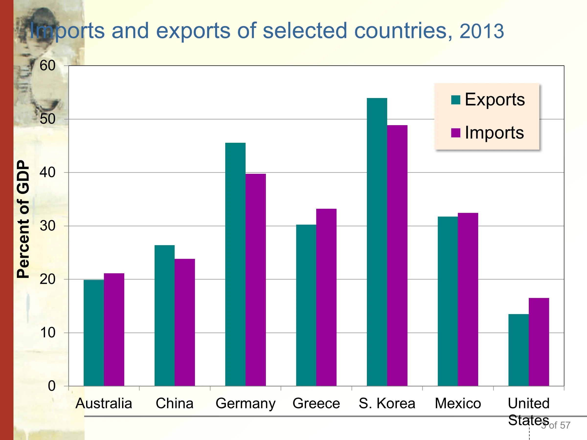
图中数据（照录）
| 国家 | Exports（占 GDP %） | Imports（占 GDP %） |
|---|---|---|
| Australia | 19.88 | 21.11 |
| China | 26.41 | 23.85 |
| Germany | 45.56 | 39.75 |
| Greece | 30.23 | 33.19 |
| S. Korea | 53.92 | 48.86 |
| Mexico | 31.75 | 32.41 |
| United States | 13.49 | 16.52 |
教师备注（原文＋译文）6 段
教师备注（原文照录）
In dollar terms, U.S. trade is huge, but as a percentage of GDP, it is smaller than that of many other countries.
Source: World Development Indicators, World Bank
http://databank.worldbank.org/ddp/home.do?Step=3&id=4
教师备注（译文）
以美元计，美国贸易规模巨大，但作为 GDP 的百分比，它比许多国家都小。
来源：世界银行《世界发展指标》
http://databank.worldbank.org/ddp/home.do?Step=3&id=4
- 关键对比：美国出口仅占 GDP 13.49%、进口 16.52%，而韩国 53.92%/48.86%、德国 45.56%/39.75%。
- 说明「贸易大国」有两种含义：绝对规模（美国最大）与相对开放度（美国最低）。这解释了为什么美国常被当作「近似封闭」的经济体来分析。
- 七个国家中六个进口 > 出口，只有中国、德国、韩国是顺差国。
6-4In an open economy
| 原文 | 中文对照 |
|---|---|
| In an open economy | 在开放经济中 |
| spending need not equal output | 支出不必等于产出 |
| saving need not equal investment | 储蓄不必等于投资 |
- 这两句是本章全部内容的起点：第 3 章的两个等式（Y = C+I+G、S = I）在这里都被打破。
- 差额由净出口与资本流动吸收：支出 − 产出 = NX；储蓄 − 投资 = NCO（6-8、6-10）。
6-5Preliminaries
| 原文 | 中文对照 |
|---|---|
| Preliminaries | 预备知识 |
| superscripts: | 上标： |
| d = spending on domestic goods | d = 对本国商品的支出 |
| f = spending on foreign goods | f = 对外国商品的支出 |
| EX = exports = foreign spending on domestic goods | EX = 出口 = 外国对本国商品的支出 |
| IM = imports = C f + I f + G f = spending on foreign goods | IM = 进口 = C^f + I^f + G^f = 对外国商品的支出 |
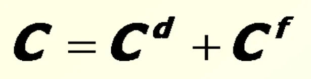
C = C^d + C^f
教师备注（原文＋译文）8 段
教师备注（原文照录）
Before displaying the second and subsequent lines, explain the first one:
Total consumption expenditure is the sum of consumer spending on domestically produced goods and foreign produced goods.
EX: The value of the goods we export to other countries equals their expenditure on our output.
IM: The value of our imports equals the portion of our country's expenditure (the portion of C+I+G) that falls on foreign products.
教师备注（译文）
在显示第二行及以后各行之前，先解释第一行：
总消费支出是消费者对本国生产商品与外国生产商品的支出之和。
EX：我们出口到其他国家的商品价值，等于它们对我们产出的支出。
IM：我们的进口价值，等于本国支出（C+I+G 中的一部分）中落在外国产品上的部分。
- 上标体系：d = domestic（本国）、f = foreign（外国），三项支出各自拆分：C = C^d + C^f，I = I^d + I^f，G = G^d + G^f。
- 关键定义：EX = 外国人对本国商品的支出（不是「我们卖出去的东西」这个笼统说法）；IM = C^f + I^f + G^f。
6-6Preliminaries, cont.
| 原文 | 中文对照 |
|---|---|
| Preliminaries, cont. | 预备知识（续） |
| NX = net exports (the "trade balance") = EX – IM | NX = 净出口（「贸易余额」）= EX − IM |
| If NX > 0, country has a trade surplus equal to NX | 若 NX > 0，该国有等于 NX 的贸易顺差 |
| If NX < 0, country has a trade deficit equal to – NX | 若 NX < 0，该国有等于 −NX 的贸易逆差 |
- 术语对应：NX > 0 = 贸易顺差（surplus）；NX < 0 = 贸易逆差（deficit）。
- 注意符号：赤字额是 −NX（正数），不要写成 NX 本身。
6-7GDP = expenditure on domestically produced g & s
| 原文 | 中文对照 |
|---|---|
| GDP = expenditure on domestically produced g & s | GDP = 对本国生产的商品与服务的支出 |
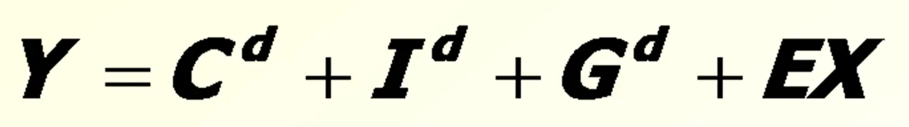
推导（照录）
GDP = C^d + I^d + G^d + EX
= (C − C^f) + (I − I^f) + (G − G^f) + EX
= C + I + G + EX − (C^f + I^f + G^f)
= C + I + G + EX − IM
= C + I + G + NX
教师备注（原文＋译文）4 段
教师备注（原文照录）
A country's GDP is total expenditure on its output of final goods & services. The first line adds up all sources of spending on domestically produced goods & services.
The second & subsequent lines present an algebraic derivation of the national income accounting identity for an open economy.
教师备注（译文）
一国的 GDP 是对其最终商品与服务产出的总支出。第一行把所有对本国生产商品与服务的支出加总。
第二行及以后各行给出开放经济国民收入核算恒等式的代数推导。
- 推导的关键一步：把 C^d 写成 C − C^f（总消费减去对外国品的消费），三项都这样做。
- 最后一步：C^f + I^f + G^f = IM，于是得到 Y = C + I + G + NX。
- 这个推导说明：N X 不是「加上去的一项」，而是把进口从 C、I、G 中扣除后的净额。
6-8The national income identity in an open economy
| 原文 | 中文对照 |
|---|---|
| The national income identity in an open economy | 开放经济的国民收入恒等式 |
| Y = C + I + G + NX | Y = C + I + G + NX |
| or, NX = Y – (C + I + G) | 或，NX = Y −（C + I + G） |
| output | 产出 |
| domestic spending | 国内支出 |
| net exports | 净出口 |
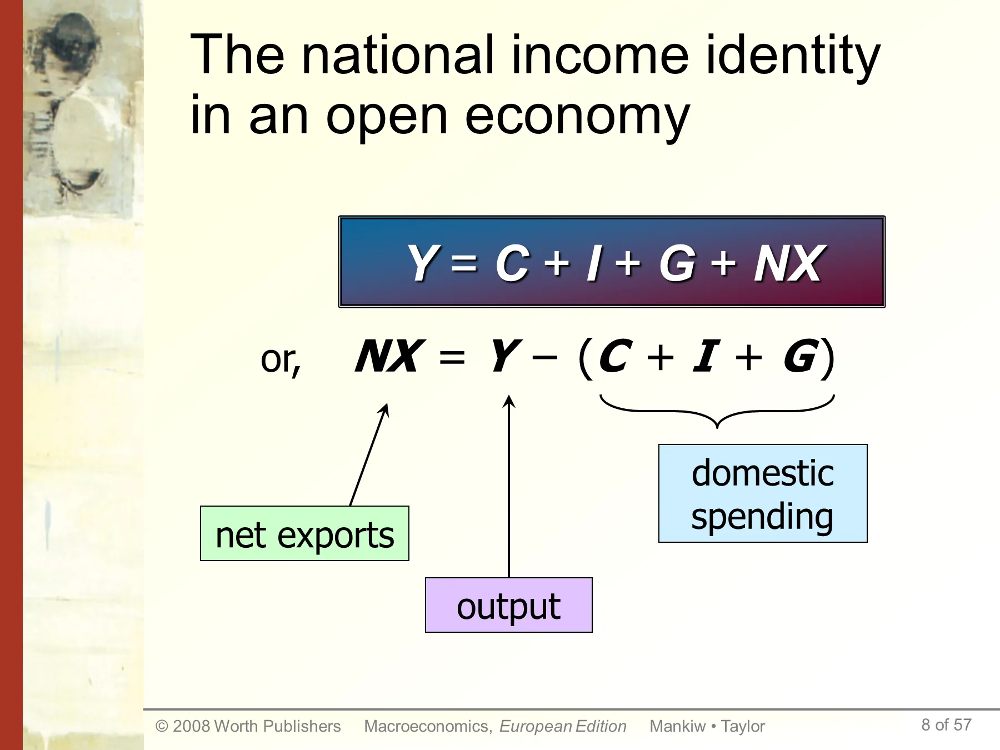
教师备注（原文＋译文）8 段
教师备注（原文照录）
Solving this identity for NX yields the second equation, which says:
A country's net exports---its net outflow of goods---equals the difference between its output and its expenditure.
Example: If we produce €100b worth of goods, and only buy €80b worth, then we export the remainder.
Of course, NX can be a negative number, which would occur if our spending exceeds our income/output.
教师备注（译文）
把这个恒等式解出 NX 就得到第二个方程，它说明：
一国的净出口——其商品的净流出——等于其产出与支出之差。
例：如果我们生产 1,000 亿欧元的商品，却只购买 800 亿欧元，那么剩下的就出口。
当然 NX 可以为负，这发生在我们支出超过收入/产出时。
- 两种读法：Y = C+I+G+NX（产出如何被使用）与 NX = Y − (C+I+G)（净出口 = 产出 − 国内支出）。
- 备注算例：产出 1,000 亿、支出 800 亿 → NX = 200 亿（顺差）。
- 这个式子只在会计上成立，不解释因果——因果由 6-36 的 S − I 给出。
6-9International capital flows
| 原文 | 中文对照 |
|---|---|
| International capital flows | 国际资本流动 |
| Net capital outflows | 资本净流出 |
| S – I | S − I |
| net outflow of "loanable funds" | 可贷资金的净流出 |
| net purchases of foreign assets the country's purchases of foreign assets minus foreign purchases of domestic assets | 外国资产的净购买 = 本国购买外国资产 − 外国购买本国资产 |
| When S > I, country is a net lender | 当 S > I，该国是净贷款国 |
| When S < I, country is a net borrower | 当 S < I，该国是净借款国 |
教师备注（原文＋译文）12 段
教师备注（原文照录）
In chapter 3, we examined a closed economy model of the loanable funds market. Savers could only lend money to domestic borrowers. Firms borrowing to finance their investment could only borrow from domestic savers. Thus, S = I.
But in an open economy, S need not equal I. A country's supply of loanable funds can be used to finance domestic investment, or to finance foreign investment (e.g. buying bonds from a foreign company that needs funding to build a new factory in its country).
Similarly, domestic firms can finance their investment projects by borrowing loanable funds from domestic savers or by borrowing them from foreign savers.
International borrowing and lending is called "international capital flows" even though it's not the physical capital that is flowing abroad --- we don't see factories uprooted and shipped to Poland or China. Rather, what can flow internationally is "loanable funds," or financial capital, which of course is used to finance the purchase of physical capital.
Note: foreign investment might involve the purchase of financial assets – stocks and bonds and so forth – or physical assets, such as direct ownership in office buildings or factories. In either case, a person in one country ends up owning part of the capital stock of another country.
The equation NFI = S – I shows that, if a country's savers supply more funds than its firms wish to borrow for investment, the excess of loanable funds will flow abroad in the form of net foreign investment (the purchase of foreign assets). Alternatively, if firms wish to borrow more than domestic savers wish to lend, then the firms borrow the excess on international financial markets; in this case, there's a net inflow of loanable funds, and NFI < 0.
教师备注（译文）
第 3 章我们考察了可贷资金市场的封闭经济模型。储蓄者只能借钱给国内借款人；为投资融资而借款的企业只能向国内储蓄者借。因此 S = I。
但在开放经济中，S 不必等于 I。一国的可贷资金供给可以用于为国内投资融资，也可以用于为外国投资融资（例如购买某外国公司的债券，该公司需要资金在本国建新工厂）。
同样，国内企业可以通过向国内储蓄者借款、也可以向外国储蓄者借款来为其投资项目融资。
国际借贷被称为「国际资本流动」，尽管流向国外的并不是实物资本——我们看不到工厂被连根拔起运到波兰或中国。能在国际上流动的是「可贷资金」或金融资本，它们当然被用于购买实物资本。
注：对外投资可能涉及购买金融资产——股票、债券等——也可能涉及购买实物资产，如直接拥有办公楼或工厂。无论哪种情形，一国的某个人最终拥有了另一国资本存量的一部分。
等式 NFI = S − I 表明：如果一国储蓄者提供的资金多于其企业想借的资金，多余的可贷资金就以净外国投资（购买外国资产）的形式流向国外。反之，如果企业想借的超过国内储蓄者愿借的，企业就在国际金融市场上借入差额；此时存在可贷资金的净流入，NFI < 0。
- 定义式：NCO（资本净流出）= S − I = 本国购买外国资产 − 外国购买本国资产。
- 两种身份：S > I → 净贷款国（net lender）；S < I → 净借款国（net borrower）。
- 备注的关键澄清：「资本流动」流的是金融资本（可贷资金），不是实物资本；但最终对应实物资本的所有权转移。
6-10Another important identity
| 原文 | 中文对照 |
|---|---|
| Another important identity | 另一个重要恒等式 |
| NX = Y – (C + I + G) | NX = Y −（C + I + G） |
| implies | 意味着 |
| NX = (Y – C – G) – I | NX =（Y − C − G）− I |
| = S – I | = S − I |
| trade balance = net capital outflows | 贸易余额 = 资本净流出 |
教师备注（原文＋译文）8 段
教师备注（原文照录）
Starting from the equation derived on slides 6 and 7, we can derive another important identity: NX = S – I
This equation says that Net exports (the net outflow of goods) = net capital outflows (the net outflow of loanable funds)
While the identity and its derivation are very simple, we learn a very important lesson from it:
A country (such as the U.S.) with persistent, large trade deficits (NX < 0) also has low saving, relative to its investment, and is a net borrower of assets.
教师备注（译文）
从第 6、7 页推导出的方程出发，我们可以推出另一个重要恒等式：NX = S − I
这个方程说明：净出口（商品的净流出）= 资本净流出（可贷资金的净流出）
尽管这个恒等式及其推导非常简单，我们从中得到一个非常重要的教训：
一个持续存在巨额贸易赤字（NX < 0）的国家（如美国），其储蓄相对于投资也偏低，并且是资产的净借入者。
- 推导只用一步：Y − C − G = S（由 3-43 的国民储蓄定义）。
- 结论：NX = S − I，即「贸易余额 = 资本净流出」。这是本章最重要的恒等式。
- 读法：贸易赤字（NX < 0）必然对应资本净流入（S − I < 0）——不是「外国人占了便宜」，而是「本国的投资超过了自己的储蓄，差额由外资提供」。
6-11Saving, investment, and the trade balance 1960–2019
| 原文 | 中文对照 |
|---|---|
| Saving, investment, and the trade balance 1960–2019 | 储蓄、投资与贸易余额，1960–2019 |
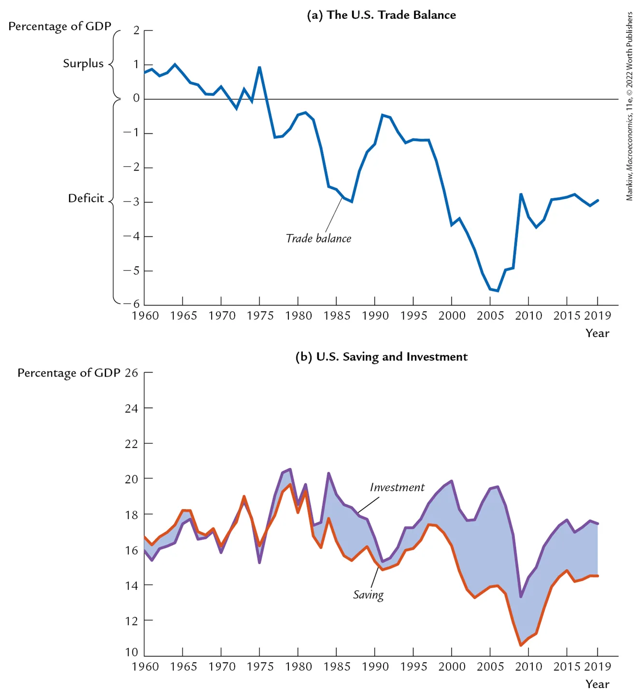
教师备注（原文＋译文）10 段
教师备注（原文照录）
Notice that investment > saving pretty consistently beginning in the early 1980s.
The trade balance is measured on the right-hand scale; note that the location of 0% is different on the two scales.
Source: Federal Reserve Bank of St. Louis
Notes: Investment was constructed as the sum of gross private domestic investment (GPDI), federal government defense investment (DGI), federal government nondefense investment (NDGI), and state and local investment (SLINV).
Saving is simply gross saving (GSAVE). The trade balance was constructed as saving minus investment.
教师备注（译文）
注意自 1980 年代初起，投资持续大于储蓄。
贸易余额用右轴衡量；注意两个坐标轴上 0% 的位置不同。
来源：圣路易斯联邦储备银行
注：投资由私人国内总投资（GPDI）、联邦政府国防投资（DGI）、联邦政府非国防投资（NDGI）以及州与地方投资（SLINV）加总构成。
储蓄即总储蓄（GSAVE）。贸易余额由储蓄减投资构造。
- 图形要点：1980 年代初起投资曲线持续高于储蓄曲线，二者之差即贸易赤字（右轴）。
- 读图陷阱（备注强调）：两条线用不同坐标轴，0% 的位置不同，不能直接用视觉差距比较。
- 数据构造：投资 = GPDI + DGI + NDGI + SLINV；贸易余额 = 储蓄 − 投资（正是 NX = S − I）。
6-12U.S.: the world's largest debtor nation
| 原文 | 中文对照 |
|---|---|
| U.S.: the world's largest debtor nation | 美国：世界最大的债务国 |
| Every year since the 1980s: huge trade deficits and net capital inflows, i.e., net borrowing from abroad | 自 1980 年代以来每年都有巨额贸易赤字与资本净流入，即向国外净借入 |
| As of 12/31/2014: | 截至 2014 年 12 月 31 日： |
| U.S. residents owned $24.7 trillion worth of foreign assets | 美国居民持有 24.7 万亿美元的外国资产 |
| Foreigners owned $31.6 trillion worth of U.S. assets | 外国人持有 31.6 万亿美元的美国资产 |
| U.S. net indebtedness to rest of the world: $6.9 trillion—higher than any other country, hence U.S. is the "world's largest debtor nation" | 美国对世界其他地区的净负债：6.9 万亿美元——高于任何其他国家，故美国是「世界最大债务国」 |
教师备注（原文＋译文）10 段
教师备注（原文照录）
Servicing this huge debt, of course, uses up some of our GDP each year, though fortunately relatively little: the U.S., so far, has been able to borrow from abroad at lower interest rates than it lends to abroad.
However, this may well change. Just as credit card companies raise your interest rate when your balance rises above a certain level, the countries that hold U.S. assets may well require higher interest rates to make them willing to continue to finance our trade deficits.
How did it get to this point? Why do we have such huge trade deficits year after year? How do government policies affect the trade deficit? These are the questions your students will learn about in the rest of this chapter.
Source: Bureau of Economic Analysis, http://www.bea.gov
Look for "International Investment Position" under "International" or "International Economic Accounts"
教师备注（译文）
为这笔巨额债务付息当然每年要消耗一部分 GDP，但幸运的是相对较少：到目前为止，美国对外借款的利率低于其对外贷款的利率。
然而，这很可能会改变。就像信用卡公司在你余额超过一定水平时提高你的利率一样，持有美国资产的国家也很可能要求更高的利率，才愿意继续为美国的贸易赤字融资。
事情是怎么走到这一步的？为什么我们年复一年有如此巨大的贸易赤字？政府政策如何影响贸易赤字？这些就是学生在本章余下部分要学习的问题。
来源：经济分析局，http://www.bea.gov
在「International」或「International Economic Accounts」下查找「International Investment Position」
- 三个数字：美国持有外国资产 24.7 万亿；外国持有美国资产 31.6 万亿；净负债 6.9 万亿（2014-12-31）。
- 校验：31.6 − 24.7 = 6.9 ✓。
- 备注的两个洞察：①美国享受「特权」——借入利率低于贷出利率，付息负担小；②这种特权可能随负债上升而消失（类比信用卡提额提价）。
6-13Saving and Investment in a Small Open Economy
| 原文 | 中文对照 |
|---|---|
| Saving and Investment in a Small Open Economy | 小型开放经济中的储蓄与投资 |
| An open-economy version of the loanable funds model from chapter 3. | 第 3 章可贷资金模型的开放经济版本。 |
| Includes many of the same elements: | 包含许多相同的要素： |
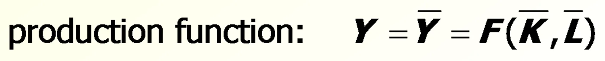
- 与第 3 章的相同之处：S = Ȳ − C(Ȳ−T̄) − Ḡ（垂直供给）、I = I(r)（向下需求）。
- 唯一但关键的差别：r 不再是内生变量，而等于世界利率 r*（6-15）。
6-14National Saving: The Supply of Loanable Funds
| 原文 | 中文对照 |
|---|---|
| National Saving: The Supply of Loanable Funds | 国民储蓄：可贷资金的供给 |
| r | r |
| S, I | S, I |
| As in Chapter 3, national saving does not depend on the interest rate | 与第 3 章一样，国民储蓄不取决于利率 |
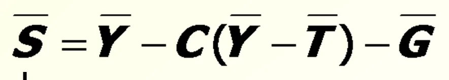
- 供给曲线垂直：S 只取决于 Y、T、G，不含 r。
- 这一点在开放经济中更加重要：因为 r 由世界市场给定，S 的位置完全由国内因素决定，而 I 由 r* 决定，两者之差就是 NX。
6-15Assumptions re: capital flows
| 原文 | 中文对照 |
|---|---|
| Assumptions re: capital flows | 关于资本流动的假设 |
| domestic & foreign bonds are perfect substitutes (same risk, maturity, etc.) | 本国与外国债券是完全替代品（风险、期限等相同） |
| perfect capital mobility: no restrictions on international trade in assets | 完全资本流动：对资产国际交易没有限制 |
| economy is small: cannot affect the world interest rate, denoted r* | 经济是小的：无法影响世界利率 r* |
| a & b imply r = r* | a 与 b 意味着 r = r* |
| c implies r* is exogenous | c 意味着 r* 是外生的 |
教师备注（原文＋译文）6 段
教师备注（原文照录）
This slide is the first on which students see a foreign variable, in this case, the foreign interest rate r. In general, a "" on a variable denotes the foreign or world version of that variable. Thus, Y* = foreign GDP, P* = foreign price level, etc.
The assumption that domestic & foreign bonds are perfect substitutes is implicit in the text, but necessary for the equality of the domestic and foreign interest rate.
Students will realize that assumption a is unrealistic, and c is unrealistic for the Eurozone as a whole, Japan or the U.S. In most cases, it would be a good approximation for any country except the U.S. or Japan individually. These assumptions keep our model simple, and we can still learn a LOT about how the world works (just as the model of supply and demand in perfectly competitive markets is not realistic, yet teaches us a great deal about how the world works).
教师备注（译文）
这是学生第一次看到外国变量，即外国利率 r。一般来说，变量上的「」表示该变量的外国或世界版本。因此 Y* = 外国 GDP，P* = 外国价格水平，等等。
本国与外国债券完全替代这一假设在教材中是隐含的，但它是本国利率与外国利率相等的必要条件。
学生会意识到假设 a 不现实，而假设 c 对整个欧元区、日本或美国也不现实。在多数情况下，对除美国或日本以外的任何单个国家，这都是一个很好的近似。这些假设使模型保持简单，而我们仍能学到很多关于世界如何运行的东西（正如完全竞争市场的供求模型并不现实，却教会我们很多）。
- 三条假设与两个结论的对应关系要记牢：
| 假设 | 内容 | 推出的结论 |
|---|---|---|
| a | 本国与外国债券完全替代 | 与 b 合用 → r = r* |
| b | 完全资本流动 | 同上 |
| c | 经济足够小 | r 外生* |
- 备注坦白承认：a 与 c 对美国、日本、欧元区都不成立——这正是 6-55「大国开放经济」要处理的问题。
6-16Investment: The Demand for Loanable Funds
| 原文 | 中文对照 |
|---|---|
| Investment: The Demand for Loanable Funds | 投资：可贷资金的需求 |
| Investment is still a downward-sloping function of the interest rate, | 投资仍是利率的向下倾斜函数， |
| r | r |
| S, I | S, I |
| I (r) | I(r) |
| but the exogenous world interest rate… | 但外生的世界利率…… |
| r * | r* |
| …determines the country's level of investment. | ……决定了该国的投资水平。 |
| I (r*) | I(r*) |
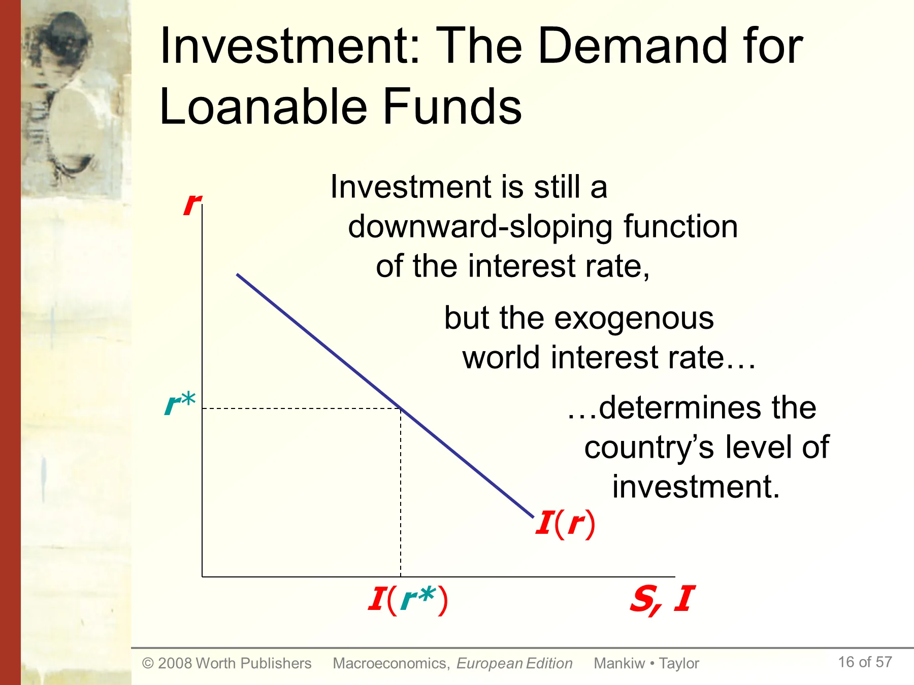
- 关键结论：*投资由 r 决定，不由国内储蓄决定**。这是开放经济与封闭经济最本质的差别。
- 图形读法：在 r = r* 的水平线上读出 I(r*)，这条水平线就是「世界利率给定」的图形表达。
6-17If the economy were closed…
| 原文 | 中文对照 |
|---|---|
| If the economy were closed… | 如果经济是封闭的…… |
| r | r |
| S, I | S, I |
| I (r) | I(r) |
| …the interest rate would adjust to equate investment and saving: | ……利率会调整到使投资等于储蓄： |
| rc | rc |
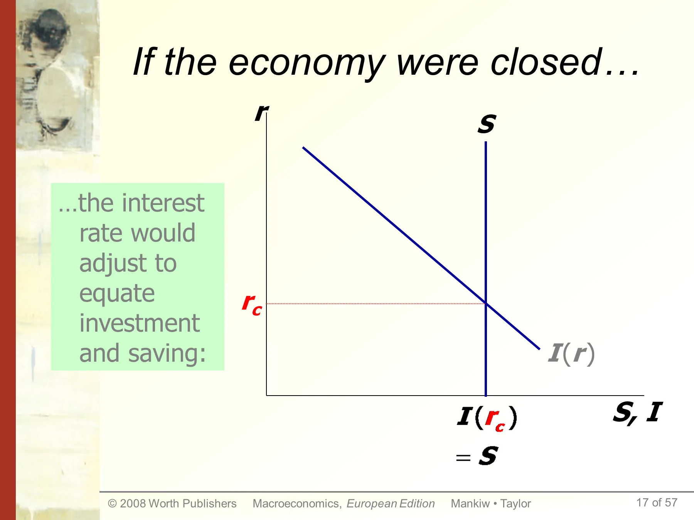
- 封闭经济：r 调整到 S = I，均衡利率为 rc（c = closed）。
- 这一页是对照基准：把它与 6-18 并排看，就能看出「开放」改变了什么。
6-18But in a small open economy…
| 原文 | 中文对照 |
|---|---|
| But in a small open economy… | 但在小型开放经济中…… |
| r | r |
| the exogenous world interest rate determines investment… | 外生的世界利率决定投资…… |
| S, I | S, I |
| I (r) | I(r) |
| NX | NX |
| …and the difference between saving and investment determines net capital outflows and net exports | ……储蓄与投资的差额决定资本净流出与净出口 |
| r* | r* |
| I 1 | I1 |
| rc | rc |
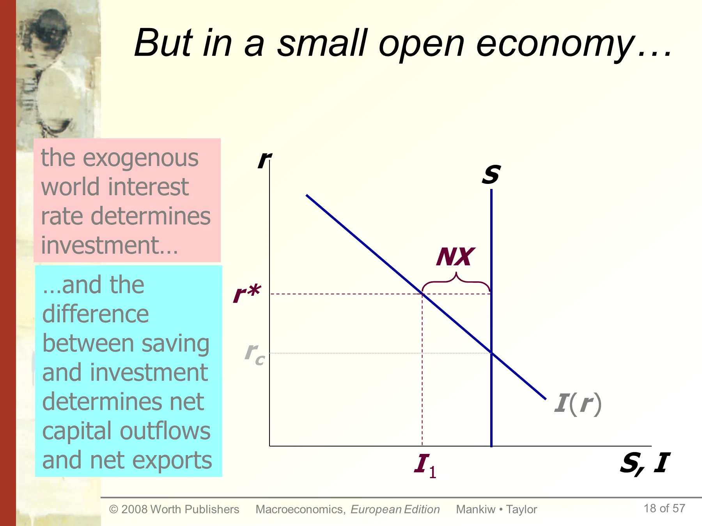
教师备注（原文＋译文）4 段
教师备注（原文照录）
This graph really determines net capital outflows, not NX. But, the national accounting identities say that NX = net capital outflows, so we write "NX" on the graph as shown.
A little bit later in the chapter, we will see that it is the adjustment of the exchange rate that ensures that NX = net capital outflows. For now, though, students will just have to trust the accounting identities.
教师备注（译文）
这张图真正决定的是资本净流出，而不是 NX。但国民核算恒等式说 NX = 资本净流出，所以我们在图上标为「NX」。
本章稍后我们会看到，正是汇率的调整保证了 NX = 资本净流出。现在，学生只需相信核算恒等式。
- 读图三步：①在 r* 处读出 I(r)；②在 r 处读出 S（垂直线的位置）；③两者之差 = NX = S − I（图中标注为 NX 的水平距离）。
- 与 6-17 对照：封闭经济中 r 会升到 rc 使 S = I；开放经济中 r 被钉在 r*，差额变成 NX。
- 备注点出逻辑缺口：图只保证 S − I，NX 相等要靠汇率调整（6-36 ~ 6-38 补上）。
6-19Three thought experiments
| 原文 | 中文对照 |
|---|---|
| Three thought experiments | 三个思想实验 |
| 1. Fiscal policy at home | 1. 国内财政政策 |
| 2. Fiscal policy abroad | 2. 国外财政政策 |
| 3. An increase in investment demand | 3. 投资需求增加 |
教师备注（原文＋译文）6 段
教师备注（原文照录）
In the textbook, NX = 0 in the economy's initial equilibrium for each of these three experiments.
In these slides, NX > 0 at the initial equilibrium.
For completeness, you might have your students repeat the three experiments for the case of NX < 0 in the initial equilibrium. This would be a good homework or in-class exercise.
教师备注（译文）
在教材中，这三个实验的初始均衡都是 NX = 0。
在这些幻灯片中，初始均衡是 NX > 0。
为完整起见，你可以让学生对初始均衡 NX < 0 的情形重做这三个实验。这是一个好的作业或课堂练习。
- 三个实验的共同逻辑：找到使 S 或 I 移动的因素 → 看 S − I 如何变 → NX 同向变。
- 初始 NX 的符号不影响结论方向，只影响数值大小（备注说明教材与本讲义设定不同）。
6-201. Fiscal policy at home
| 原文 | 中文对照 |
|---|---|
| 1. Fiscal policy at home | 1. 国内财政政策 |
| r | r |
| S, I | S, I |
| I (r) | I(r) |
| An increase in G or decrease in T reduces saving. | G 增加或 T 减少会降低储蓄。 |
| NX2 | NX2 |
| I 1 | I1 |
| NX1 | NX1 |
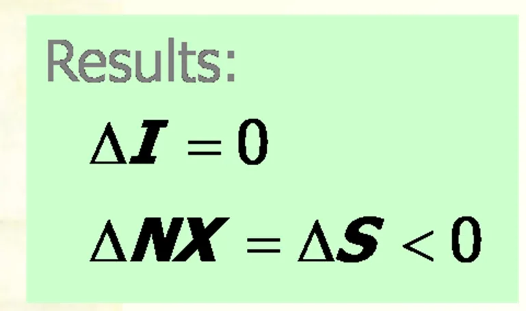
教师备注（原文＋译文）6 段
教师备注（原文照录）
In a small open economy, the fixed world interest rate pins down the value of investment, regardless of fiscal policy changes. Thus, a €1 decrease in saving causes a €1 decrease in NX and net capital outflows.
Note that the analysis on this slide applies to ANYTHING that causes a decrease in saving. Other examples: a shift in consumer preferences regarding the tradeoff between saving and consumption, or a change in the tax laws that reduces the incentive to save.
Our model generates a prediction: the government's budget deficit and the country's trade deficit should be positively related. Does this prediction come true in the real world? Let's look at the data….
教师备注（译文）
在小型开放经济中，固定的世界利率锁定了投资的价值，无论财政政策如何变化。因此，储蓄减少 1 欧元会使 NX 与资本净流出减少 1 欧元。
注意本页的分析适用于任何导致储蓄减少的因素。其他例子：消费者对储蓄与消费权衡的偏好发生变化，或税法变化降低了储蓄激励。
我们的模型给出一个预测：政府预算赤字与本国贸易赤字应正相关。这个预测在现实世界成立吗？看数据……
- 传导链：G↑ 或 T↓ → S 左移 → S − I 减少 → NX 减少（贸易赤字扩大）。
- 关键数字关系（备注）：ΔS = ΔNX，一比一。因为 I 被 r* 钉住不动。
- 术语：这就是「双赤字」（twin deficits）假说——财政赤字与贸易赤字同向变动。
6-21NX and the federal budget deficit (% of GDP), 1960–2020
| 原文 | 中文对照 |
|---|---|
| NX and the federal budget deficit (% of GDP), 1960–2020 | 净出口与联邦预算赤字（占 GDP %），1960–2020 |
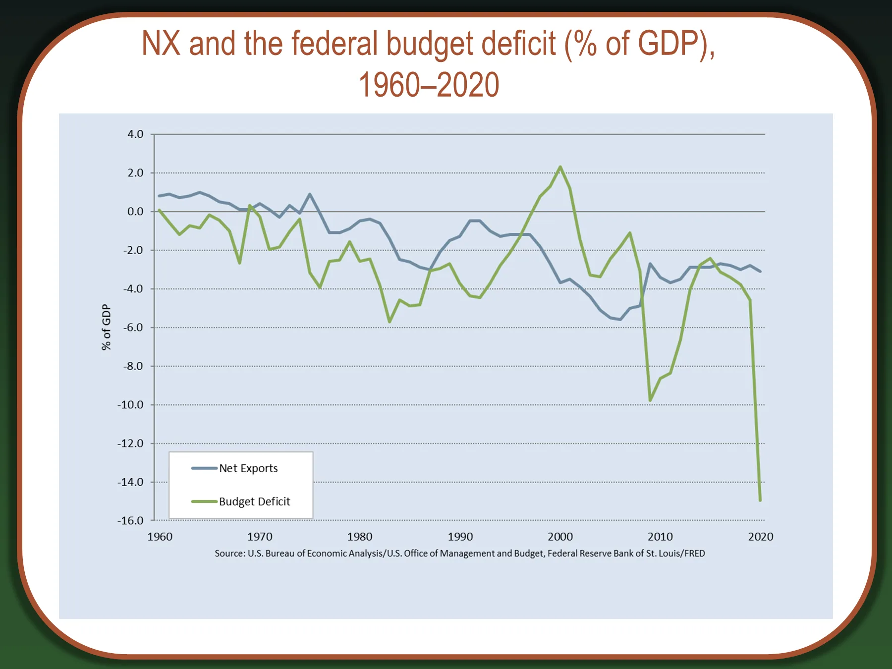
教师备注（原文＋译文）12 段
教师备注（原文照录）
Our model implies a negative relationship between NX and the budget deficit. We observe this negative relationship during most periods.
There are some exceptions. For example, from 1991 to 2001, NX and the budget deficit fell due to a long expansion: rising incomes increased imports and tax revenues.
And, in 2008–2009, NX and the budget deficit rose as the economy faltered: falling incomes reduce both tax revenue and imports.
Source: Department of Commerce.
Obtained from: http://research.stlouisfed.org/fred2/
Series ID: A019RC1A027NBEA (NX), FYFSD, and GDPA (Note: Deficit is in Millions of dollars, needs to be transformed)
教师备注（译文）
我们的模型意味着 NX 与预算赤字之间是负相关关系。我们在多数时期观察到这种负相关。
有一些例外。例如 1991–2001 年，由于长期扩张，NX 与预算赤字同时下降：收入上升增加了进口与税收。
而 2008–2009 年，随着经济走弱，NX 与预算赤字同时上升：收入下降既减少了税收也减少了进口。
来源：商务部。
取自：http://research.stlouisfed.org/fred2/
序列代码：A019RC1A027NBEA（NX）、FYFSD 与 GDPA（注：赤字单位为百万美元，需要转换）
- 模型预测：赤字↑ → NX↓（负相关）。数据在多数时期支持。
- 两个反例（备注）：1991–2001 长期扩张（收入↑ → 进口↑ 且税收↑ → NX 与赤字同降）；2008–2009 衰退（收入↓ → 进口↓ 且税收↓ → NX 与赤字同升）。
- 反例的共同原因：收入 Y 同时影响进口与税收，这是模型未考虑的第三条渠道。
6-222. Fiscal policy abroad
| 原文 | 中文对照 |
|---|---|
| 2. Fiscal policy abroad | 2. 国外财政政策 |
| r | r |
| S, I | S, I |
| I (r) | I(r) |
| Expansionary fiscal policy abroad raises the world interest rate. | 国外的扩张性财政政策提高世界利率。 |
| NX2 | NX2 |
| NX1 | NX1 |
| Results: | 结果： |
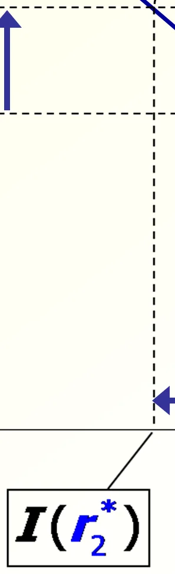
教师备注（原文＋译文）4 段
教师备注（原文照录）
It might be worth taking a moment to explain that the world interest rate r* is determined by saving and investment in the world loanable funds market. S* is the sum of all countries' saving; I* the sum of all countries' investment. r* adjusts to equate I* with S, just like in Chapter 3, because the world as a whole is a closed economy. A fiscal expansion in other countries would reduce S and raise r* (same results as in chapter 3).
The higher world interest rate reduces investment in our small open economy, and hence reduces the demand for loanable funds. The supply of loanable funds (national saving) is unchanged, so there's an increase in the amount of funds flowing abroad.
教师备注（译文）
花点时间解释世界利率 r* 由世界可贷资金市场的储蓄与投资决定可能是值得的。S* 是所有国家储蓄之和，I* 是所有国家投资之和。r* 调整到使 I* = S，就像第 3 章一样，因为整个世界作为一个整体是封闭经济。其他国家的财政扩张会降低 S 并提高 r*（与第 3 章结果相同）。
更高的世界利率降低了我们这个小开放经济的投资，从而降低了可贷资金需求。可贷资金供给（国民储蓄）不变，于是流往国外的资金量增加。
- 传导链：**国外财政扩张 → 世界储蓄 S↓ → r↑ → 本国 I(r*)↓ → S − I↑ → NX↑**。
- 与 6-20 方向相反：国内财政扩张使 NX↓，国外财政扩张使 NX↑。这是考试最常见的对比题。
- 备注补充了 r* 的决定机制：世界整体是封闭经济，所以第 3 章的 S = I 逻辑适用于全世界。
6-233. An increase in investment demand（题目）
| 原文 | 中文对照 |
|---|---|
| 3. An increase in investment demand | 3. 投资需求增加 |
| r | r |
| S, I | S, I |
| S | S |
| I (r)1 | I(r)₁ |
| I 1 | I1 |
| NX1 | NX1 |
| EXERCISE: | 练习： |
| Use the model to determine the impact of an increase in investment demand on NX, S, I, and net capital outflow. | 用模型判断投资需求增加对 NX、S、I 与资本净流出的影响。 |
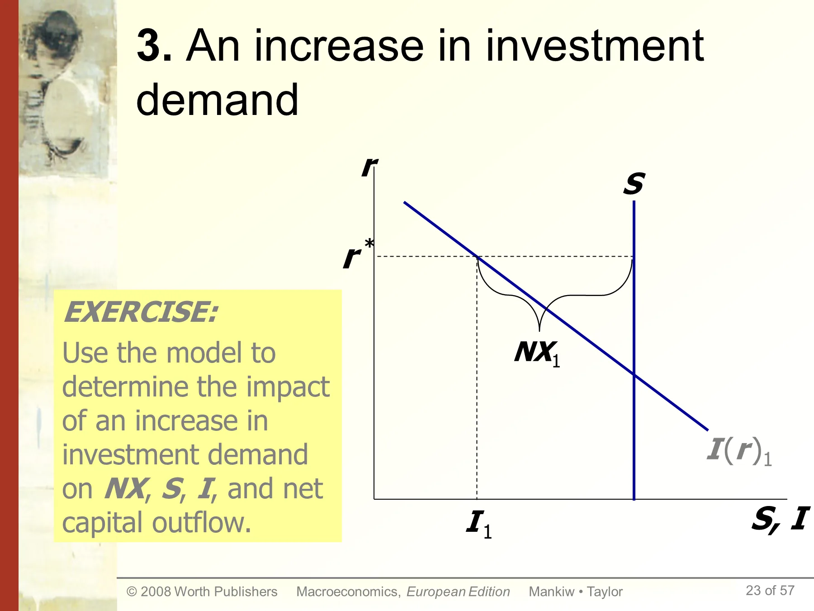
教师备注（原文＋译文）4 段
教师备注（原文照录）
Have students get out a piece of paper, draw this graph on it, and then do the analysis. A couple of minutes should suffice.
It might be useful to have them compare their answers with the results from the closed economy case.
教师备注（译文）
让学生拿出一张纸，画出这张图，然后做分析。几分钟就够了。
让他们把答案与封闭经济情形下的结果比较，可能会有用。
- 四个待答变量：NX、S、I、资本净流出。答案见 6-24。
- 提示：在开放经济中，I 的移动不会像封闭经济那样被 S 约束。
6-243. An increase in investment demand（答案）
| 原文 | 中文对照 |
|---|---|
| 3. An increase in investment demand | 3. 投资需求增加 |
| r | r |
| S, I | S, I |
| S | S |
| I (r)2 | I(r)₂ |
| NX2 | NX2 |
| ANSWERS: | 答案： |
| I > 0, | ΔI > 0， |
| S = 0, | ΔS = 0， |
| net capital outflows and net exports fall by the amount I | 资本净流出与净出口下降 ΔI |
| I (r)1 | I(r)₁ |
| I 1 | I1 |
| I 2 | I2 |
| NX1 | NX1 |
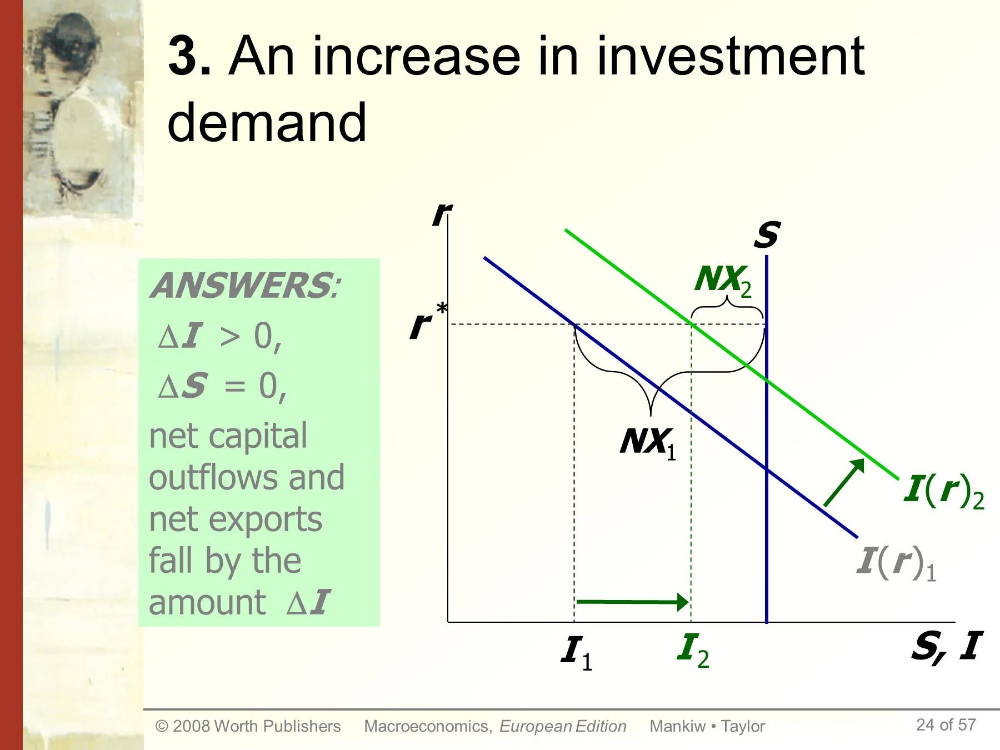
教师备注（原文＋译文）2 段
教师备注（原文照录）
In contrast to a closed economy, investment is not constrained by the fixed (domestic) supply of loanable funds. Hence, the increase in firm's demand for loanable funds can be satisfied by borrowing abroad, which reduces net outflows of financial capital. And since net capital outflows = NX, we see a fall in NX equal to the increase in investment.
教师备注（译文）
与封闭经济相反，投资不受固定的（国内）可贷资金供给的约束。因此，企业可贷资金需求的增加可以通过向国外借款来满足，这减少了金融资本的净流出。而由于资本净流出 = NX，我们看到 NX 下降的幅度等于投资的增加。
- 四个答案：ΔI > 0、ΔS = 0、资本净流出下降、NX 下降，且降幅 = ΔI。
- 与封闭经济的对比：封闭经济中投资需求上升只会推高 r（3-58），I 不变；开放经济中 r 固定，I 真的增加，代价是 NX 减少。
- 一句话：开放经济里，投资可以超过储蓄，差额由进口（NX < 0）来融资。
6-25The nominal exchange rate（名义汇率）
| 原文 | 中文对照 |
|---|---|
| The nominal exchange rate（名义汇率） | 名义汇率 |
| e = nominal exchange rate, the relative price of domestic currency in terms of foreign currency | e = 名义汇率，即本国货币以外币表示的相对价格 |
| (e.g. Yen per Euro or Pound) | （例如每欧元或每英镑兑换多少日元） |
- 定义要点：e 是「一单位本币换多少外币」，报价方式必须明确（是 yen per euro 还是 euro per yen）。
- 本章约定：e 上升 = 本币升值（同样一单位本币能换更多外币）。做题时先确认方向。
6-26A few exchange rates, as of 1/31/2020
| Country | Exchange rate |
|---|---|
| Euro area | 0.82 euro/$ |
| Indonesia | 14,030 rupiahs/$ |
| Japan | 104.70 yen/$ |
| Mexico | 20.48 pesos/$ |
| Russia | 65.85 rubles/$ |
| South Africa | 15.16 rand/$ |
| U.K. | 0.73 pounds/$ |
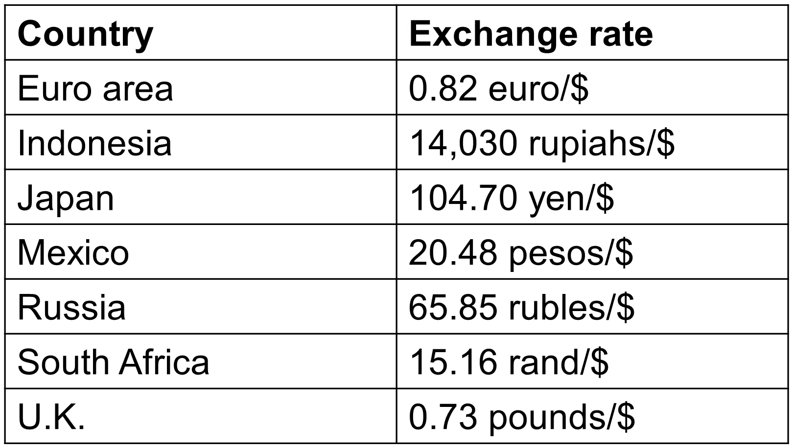
| 国家/地区 | 汇率 |
|---|---|
| 欧元区 | 0.82 欧元/美元 |
| 印度尼西亚 | 14,030 印尼盾/美元 |
| 日本 | 104.70 日元/美元 |
| 墨西哥 | 20.48 比索/美元 |
| 俄罗斯 | 65.85 卢布/美元 |
| 南非 | 15.16 兰特/美元 |
| 英国 | 0.73 英镑/美元 |
教师备注（原文＋译文）2 段
教师备注（原文照录）
If you'd like to update these figures before your lecture, you can find good exchange rate data at https://www.xe.com/currencytables/?from=USD&date=2021-01-31
教师备注（译文）
如果你想在讲课前更新这些数字，可以在 https://www.xe.com/currencytables/?from=USD&date=2021-01-31 找到好的汇率数据。
- 全部以美元为基准（每 1 美元兑多少外币），所以数值大小反映外币的「贵贱」。
- 只有欧元与英镑小于 1（0.82、0.73），说明这两种货币比美元「贵」。
6-27The real exchange rate（实际汇率）
| 原文 | 中文对照 |
|---|---|
| The real exchange rate（实际汇率） | 实际汇率 |
| = real exchange rate, the relative price of domestic goods in terms of foreign goods | ε = 实际汇率，即本国商品以外國商品表示的相对价格 |
| (e.g. price of a Mars bar in Tokyo per price of a Mars bar in Frankfurt) | （例如东京一条玛氏巧克力的价格 ÷ 法兰克福一条玛氏巧克力的价格） |
| ε the lowercase Greek letter epsilon | ε 是小写希腊字母 epsilon |
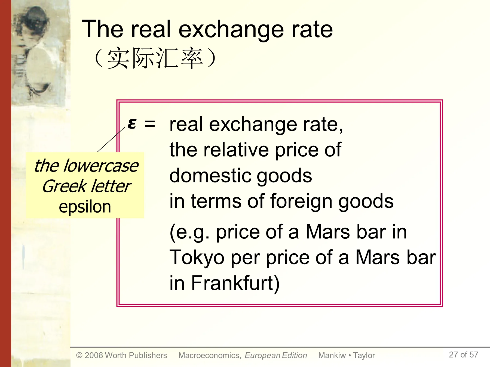
- 与名义汇率的区别：名义汇率是货币的相对价格，实际汇率是商品的相对价格。
- 单位读法：ε = 单位外国商品 / 单位本国商品（一单位本国商品能换多少单位外国商品）。
- ε 上升 = 本国商品变贵（实际升值）。
6-28Understanding the units of ε
| 原文 | 中文对照 |
|---|---|
| Understanding the units of ε | 理解 ε 的单位 |
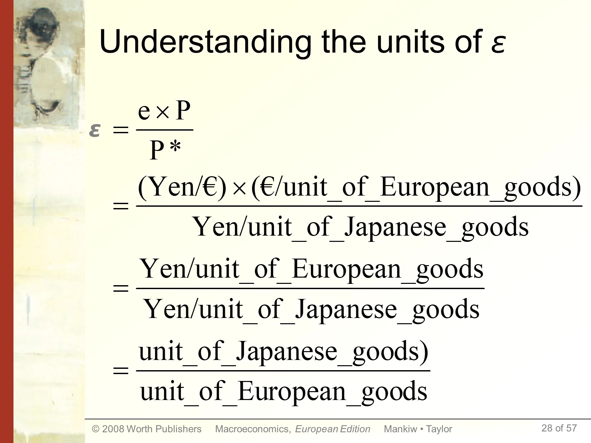
ε = (e × P) / P*
= [(Yen/€) × (€/unit of European goods)] / (Yen/unit of Japanese goods)
= (Yen/unit of European goods) / (Yen/unit of Japanese goods)
= unit of Japanese goods / unit of European goods
ε =（e × P）/ P*
= ［（日元/欧元）×（欧元/单位欧洲商品）］÷（日元/单位日本商品）
=（日元/单位欧洲商品）÷（日元/单位日本商品）
= 单位日本商品 / 单位欧洲商品
教师备注（原文＋译文）8 段
教师备注（原文照录）
Students often have trouble understanding the units of the real exchange rate.
It's worth explaining each line carefully, and making sure students understand it before displaying the next line.
Note: The examples here and in the text are in terms of one good, a Mars bar. But P and P* are the overall price levels of the domestic & foreign countries. Thus, they each measure the price of a basket of goods.
When you get to the bottom line, emphasize that the real exchange rate measures the amount of purchasing power in Japan that must be sacrificed for each unit of purchasing power in Europe.
教师备注（译文）
学生常常难以理解实际汇率的单位。
值得逐行仔细解释，并确保学生在显示下一行之前已经理解。
注：这里的例子与教材中的例子都用单一商品（玛氏巧克力）来说明。但 P 与 P* 是本国与外国的总体价格水平，因此它们各自衡量一篮子商品的价格。
讲到最后一行的，要强调：实际汇率衡量的是，为换取一单位欧洲的购买力，必须牺牲多少日本的购买力。
- 三步化简：货币单位相消（日元/欧元 × 欧元 = 日元）→ 剩下「日元/单位商品」之比 → 最终得到实物单位之比。
- 公式记忆：ε = e × P / P，其中 e 是「外币/本币」，P 是本国价格，P 是外国价格。
- 结论：ε 是一个纯数（无货币单位），表示「一单位本国商品换多少单位外国商品」。
6-29Example
| 原文 | 中文对照 |
|---|---|
| Example | 例 |
| one good: Mars bar | 一种商品：玛氏巧克力 |
| price in Tokyo: P* = 48 Yen | 东京价格：P* = 48 日元 |
| price in Frankfurt: P = €0.60 | 法兰克福价格：P = 0.60 欧元 |
| nominal exchange rate e = 120 Yen/€ | 名义汇率 e = 120 日元/欧元 |
| To buy an European Mars bar, someone from Japan would have to pay an amount that could buy 1.5 Japanese Mars bars. | 要买一条欧洲的玛氏巧克力，日本人须支付相当于 1.5 条日本玛氏巧克力的金额。 |
| ε | ε |
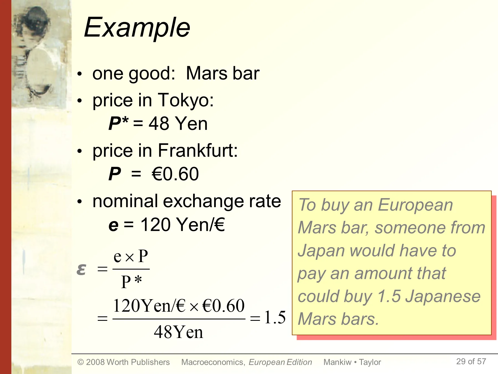
计算（照录）
ε = (e × P) / P* = (120 × 0.60) / 48 = 72 / 48 = 1.5
- 结果 ε = 1.5：一单位欧洲商品 = 1.5 单位日本商品，即欧洲商品相对更贵。
- 三步算法：先换算成同一货币（120 × 0.60 = 72 日元）→ 再除以外国价格（72/48）→ 得到实物比价。
- 若 ε > 1，说明本国（此例为欧洲）商品相对昂贵，出口竞争力弱。
6-30ε in the real world & our model
| 原文 | 中文对照 |
|---|---|
| ε in the real world & our model | 现实世界与模型中的 ε |
| In the real world: We can think of ε as the relative price of a basket of domestic goods in terms of a basket of foreign goods | 在现实世界：可以把 ε 理解为一篮子本国商品以一篮子外国商品表示的相对价格 |
| In our macro model: There's just one good, "output." So ε is the relative price of one country's output in terms of the other country's output | 在我们的宏观模型中：只有一种商品「产出」。所以 ε 是一国产出以另一国产出表示的相对价格 |
教师备注（原文＋译文）2 段
教师备注（原文照录）
A good candidate for the basket of goods mentioned here is the CPI basket. Perhaps a better candidate would be a basket including all goods & services that comprise GDP. Then, the real exchange rate would measure how many units of foreign GDP trade for one unit of domestic GDP.
教师备注（译文）
这里提到的一篮子商品，CPI 篮子是一个不错的候选。更好的候选或许是包含构成 GDP 的全部商品与服务的一篮子。那样，实际汇率就衡量多少单位的外国 GDP 与一单位本国 GDP 交换。
- 现实与模型的差别只是商品种类的多少：现实中是「篮子对篮子」，模型中只有一种「产出」。
- 备注的建议：用 GDP 篮子而非 CPI 篮子，则 ε = 「多少单位外国 GDP 换一单位本国 GDP」，与模型的一商品设定完全一致。
6-31How NX depends on ε
| 原文 | 中文对照 |
|---|---|
| How NX depends on ε | NX 如何取决于 ε |
| ε ⇒ home goods become more expensive relative to foreign goods | ε 上升 ⇒ 本国商品相对外国商品变贵 |
| ⇒ EX, IM | ⇒ 出口下降、进口上升 |
| ⇒ NX | ⇒ 净出口下降 |
- 传导链：ε↑ → 本国商品变贵 → 出口减少、进口增加 → NX 减少。
- 这是需求定律在国际市场的应用：相对价格上升 → 需求量下降。
- 方向必须记牢：ε 与 NX 反向（这是 6-34 曲线向下倾斜的原因）。
6-32U.S. net exports and the real exchange rate, 1973-2014
| 原文 | 中文对照 |
|---|---|
| U.S. net exports and the real exchange rate, 1973-2014 | 美国净出口与实际汇率，1973–2014 |
| Trade-weighted real exchange rate index (March 1973 = 100) | 贸易加权实际汇率指数（1973 年 3 月 = 100） |
| (% of GDP) | （占 GDP %） |
| NX | NX |
| Index | 指数 |
| Net exports (left scale) | 净出口（左轴） |
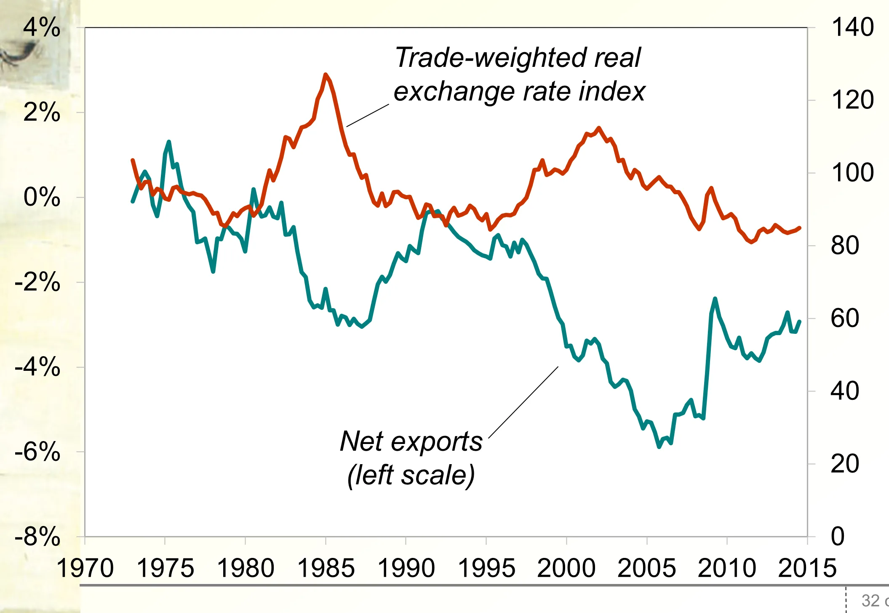
教师备注（原文＋译文）8 段
教师备注（原文照录）
The real exchange rate here is a broad index. Source: Federal Reserve Statistical Release H.10, Board of Governors.
http://www.federalreserve.gov/releases/h10/summary/indexbc_m.txt
NX as a percent of GDP was computed from NX and GDP source data from Department of Commerce, Bureau of Economic Analysis, obtained at: http://research.stlouisfed.org/fred2/
The RER data are monthly and the NX and Y data are quarterly, so the RER series shown in the graph is a quarterly series where each value is an average of the three monthly values from that quarter.
教师备注（译文）
这里的实际汇率是一个宽口径指数。来源：美联储统计发布 H.10，理事会。
http://www.federalreserve.gov/releases/h10/summary/indexbc_m.txt
NX 占 GDP 的比重由商务部经济分析局的 NX 与 GDP 数据计算，取自：http://research.stlouisfed.org/fred2/
实际汇率数据为月度，NX 与 Y 数据为季度，所以图中显示的实际汇率序列是季度序列，每个值为该季度三个月度值的平均。
- 两条线走势大致镜像：实际汇率指数上升（美元实际升值）时，NX 下降——符合 6-31 的反向关系。
- 1980 年代中期的强美元对应贸易赤字扩大；2008 年后美元走弱对应 NX 改善。
- 注意坐标轴：NX 用左轴（% of GDP），指数用右轴，不能直接比较高度。
6-33The net exports function
| 原文 | 中文对照 |
|---|---|
| The net exports function | 净出口函数 |
| The net exports function reflects this inverse relationship between NX and ε: | 净出口函数反映 NX 与 ε 之间的这种反向关系： |
| NX = NX (ε) | NX = NX(ε) |
- 函数记号：NX = NX(ε)，表示净出口是实际汇率的函数（一般函数记号，1-39 的用法）。
- 性质：dNX/dε < 0（向下倾斜）。
6-34The NX curve
| 原文 | 中文对照 |
|---|---|
| The NX curve | NX 曲线 |
| 0 | 0 |
| NX | NX |
| ε | ε |
| NX(ε) | NX(ε) |
| NX(ε1) | NX(ε1) |
| so net exports will be high | 因此净出口会很高 |
| When ε is relatively low, home goods are relatively inexpensive | 当 ε 相对低时，本国商品相对便宜 |
| ε1 | ε1 |
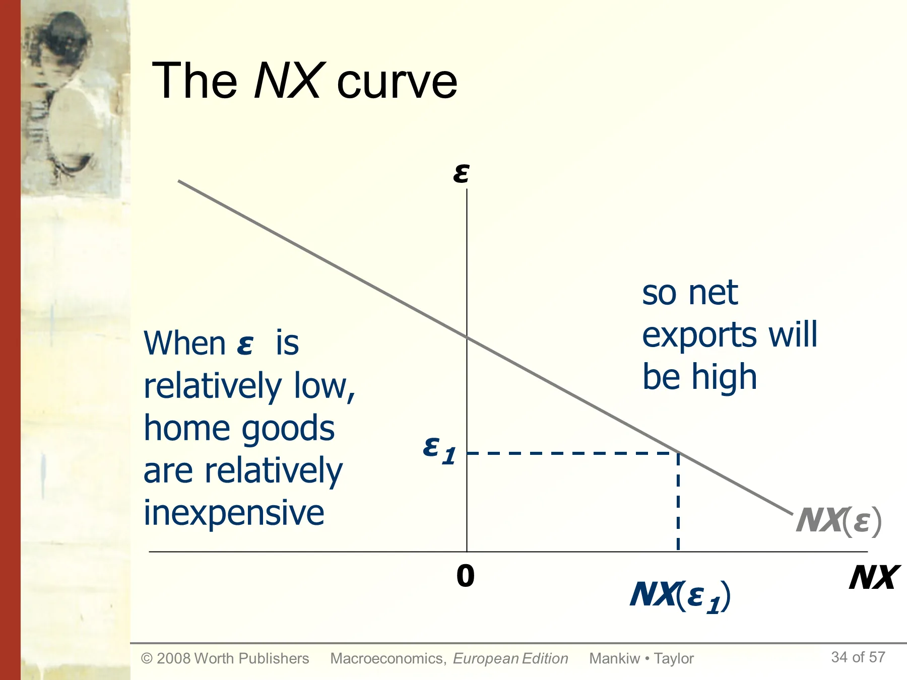
- 低 ε 段：本国商品便宜 → 出口强、进口弱 → NX 高（可能为顺差）。
- 曲线向右下方倾斜，横轴为 ε、纵轴为 NX。
6-35The NX curve（高 ε 段）
| 原文 | 中文对照 |
|---|---|
| The NX curve | NX 曲线 |
| At high enough values of ε, home goods become so expensive that | 当 ε 足够高时，本国商品变得如此昂贵，以致 |
| 0 | 0 |
| ε | ε |
| NX | NX |
| NX(ε) | NX(ε) |
| ε2 | ε2 |
| we export less than we import | 我们的出口少于进口 |
| NX(ε2) | NX(ε2) |
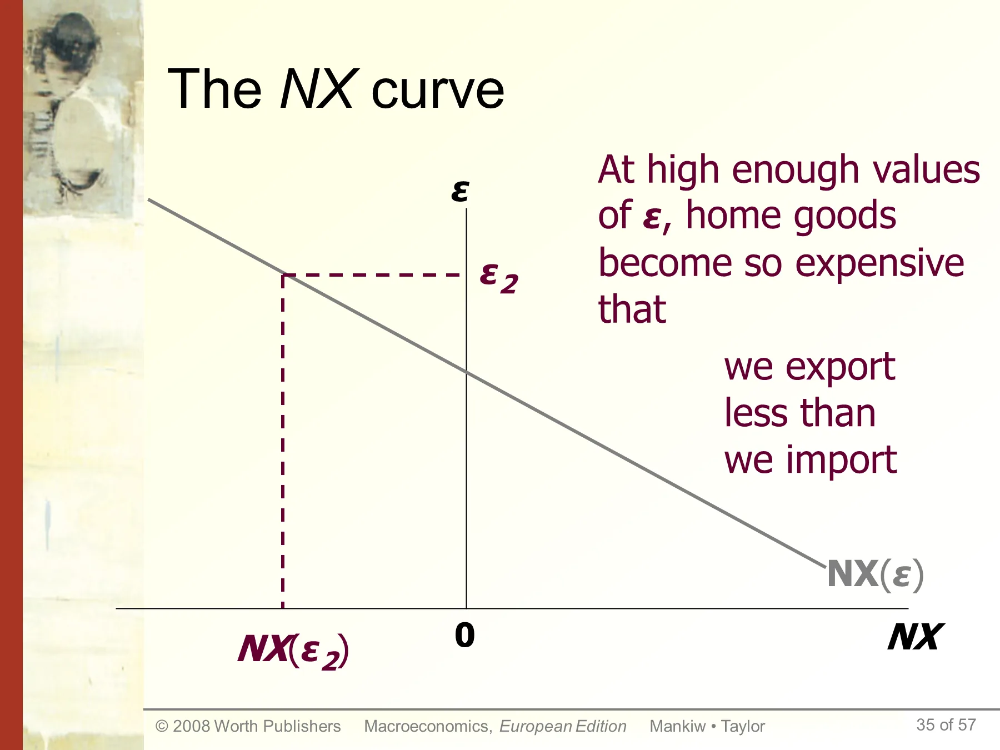
- 高 ε 段：NX < 0（贸易赤字）——曲线穿过横轴进入负值区。
- 与 6-34 合起来，NX 曲线是一条连续向下倾斜、可正可负的曲线。
6-36How ε is determined
| 原文 | 中文对照 |
|---|---|
| How ε is determined | ε 如何决定 |
| The accounting identity says NX = S - I | 核算恒等式说 NX = S − I |
| We saw earlier how S - I is determined: | 我们前面已看到 S − I 如何决定： |
| S depends on domestic factors (output, fiscal policy variables, etc) | S 取决于国内因素（产出、财政政策变量等） |
| I is determined by the world interest rate r * | I 由世界利率 r* 决定 |
| So, ε must adjust to ensure | 所以，ε 必须调整以保证 |
均衡条件（照录）
NX(ε) = S − I
教师备注（原文＋译文）2 段
教师备注（原文照录）
In the equation, ε is the only endogenous variable, hence this equation determines its value.
教师备注（译文）
在方程中，ε 是唯一的内生变量，因此这个方程决定它的值。
- 逻辑链：*S 由国内因素定、I 由 r 定 → S − I 是一个常数 → ε 必须调整到使 NX(ε) 等于这个常数**。
- 这是本章的核心均衡条件：汇率不是由「购买力」直接决定，而是由「净资本流出」决定（PPP 是特例，6-51）。
6-37How ε is determined（图示）
| 原文 | 中文对照 |
|---|---|
| How ε is determined | ε 如何决定 |
| ε | ε |
| NX | NX |
| Neither S nor I depend on ε, so the net capital outflow curve is vertical. | S 与 I 都不取决于 ε，所以资本净流出曲线是垂直的。 |
| NX(ε) | NX(ε) |
| ε 1 | ε1 |
| ε adjusts to equate NX with net capital outflow, S - I. | ε 调整到使 NX 等于资本净流出 S − I。 |
| NX 1 | NX1 |
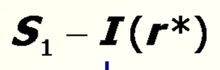
教师备注（原文＋译文）4 段
教师备注（原文照录）
*** Note ***
At the lower left corner of this graph, NX does NOT NECESSARILY EQUAL ZERO!!!
教师备注（译文）
*** 注意 ***
在这张图的左下角，NX 不一定等于零！！！
- 两条线：垂直的 S − I 线（与 ε 无关）与向下倾斜的 NX(ε)，交点决定 ε₁ 与 NX₁。
- 备注的警告针对读图错误：纵轴是 ε，横轴是 NX，原点处 NX = 0 但曲线不必经过原点。
6-38Interpretation: supply and demand in the foreign exchange market
| 原文 | 中文对照 |
|---|---|
| Interpretation: supply and demand in the foreign exchange market | 解读：外汇市场的供给与需求 |
| Demand: | 需求： |
| Foreigners need dollars to buy U.S. net exports. | 外国人需要美元来购买美国的净出口。 |
| ε | ε |
| NX | NX |
| NX(ε) | NX(ε) |
| Supply: | 供给： |
| Net capital outflow (S - I) is the supply of dollars to be invested abroad. | 资本净流出（S − I）是用于对外投资的美元供给。 |
| ε1 | ε1 |
| NX 1 | NX1 |
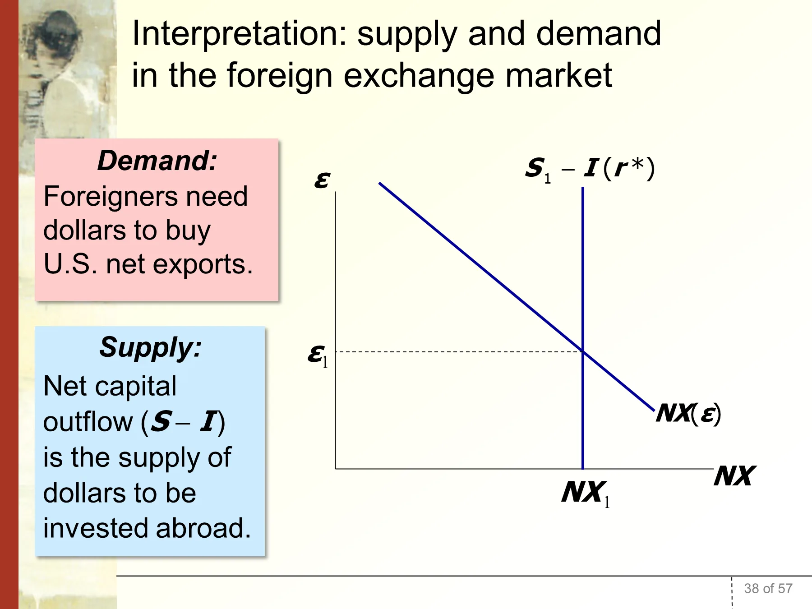
教师备注（原文＋译文）4 段
教师备注（原文照录）
WARNING: Don't let your students confuse the demand for dollars in the foreign exchange market with demand for real money balances (Chapter 4), or the supply of dollars in the foreign exchange market with the supply of money (Chapter 4).
If you and your students are as anal, er, I mean, as detail-oriented as me: NX is actually the net demand for dollars: foreign demand for dollars to purchase our exports minus our supply of dollars to purchase imports. Net capital outflow is the net supply of dollars: the supply of dollars from U.S. residents investing abroad minus the demand for dollars from foreigners buying U.S. assets.
教师备注（译文）
警告：不要让学生把外汇市场对美元的需求与（第 4 章的）实际货币余额需求混淆，也不要把外汇市场的美元供给与（第 4 章的）货币供给混淆。
如果你和你的学生像我一样「较真」——我是说，一样注重细节：NX 实际上是对美元的净需求：外国人为购买我们出口而需求美元，减去我们为购买进口而供给美元。资本净流出是美元的净供给：美国居民对外投资所供给的美元，减去外国人购买美国资产所需求的美元。
- 两种读法完全等价：实物读法（NX 与 S−I 相等）与外汇读法（美元需求 = 美元供给）。
- 备注强调「净」字：NX 是净需求，S−I 是净供给——都已经是差额，不是总量。
- 易错点（备注警告）：外汇市场的美元供求 ≠ 货币市场的货币供求，两者分属第 4 章与第 6 章。
6-39Four experiments
| 原文 | 中文对照 |
|---|---|
| Four experiments | 四个实验 |
| 1. Fiscal policy at home | 1. 国内财政政策 |
| 2. Fiscal policy abroad | 2. 国外财政政策 |
| 3. An increase in investment demand | 3. 投资需求增加 |
| 4. Trade policy to restrict imports | 4. 限制进口的贸易政策 |
- 前三个与 6-19 相同，但这里关注的是汇率的反应；第四个是新增的贸易政策实验。
- 四个实验的判据统一：看 S − I 是否移动。移动 → ε 变；不移动 → ε 不变（6-44）。
6-401. Fiscal policy at home
| 原文 | 中文对照 |
|---|---|
| 1. Fiscal policy at home | 1. 国内财政政策 |
| A fiscal expansion reduces national saving, net capital outflows, and the supply of pounds in the foreign exchange market… | 财政扩张降低国民储蓄、资本净流出以及外汇市场上的英镑供给…… |
| …causing the real exchange rate to rise and NX to fall. | ……导致实际汇率上升、NX 下降。 |
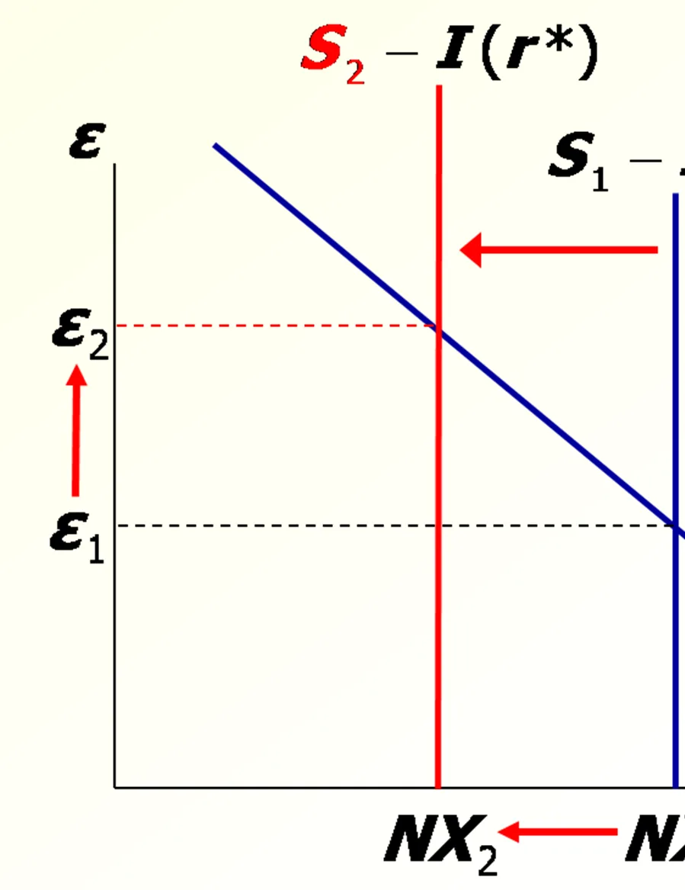
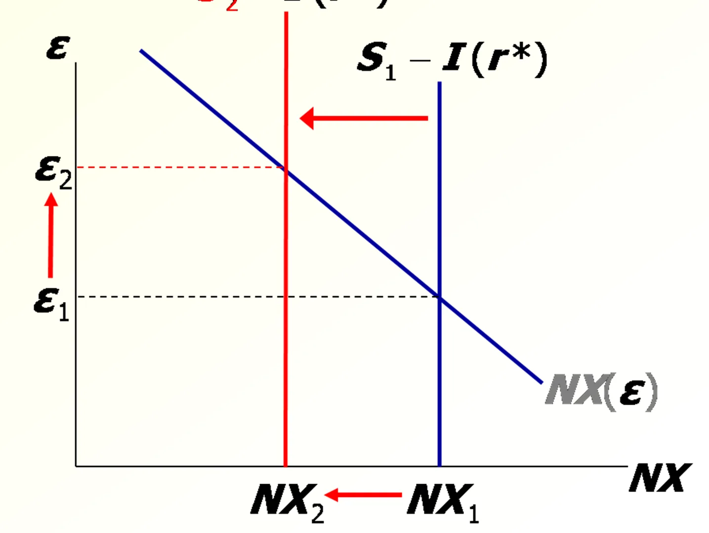
- 传导链：S↓ → S − I↓ → 垂直供给线左移 → ε↑（实际升值）→ NX↓。
- 与 6-20 一致：国内财政扩张最终表现为贸易赤字 + 货币实际升值。这正是 1980 年代里根政策的模式（6-54）。
6-412. Fiscal policy abroad
| 原文 | 中文对照 |
|---|---|
| 2. Fiscal policy abroad | 2. 国外财政政策 |
| An increase in r* reduces investment, increasing net capital outflows and the supply of pounds in the foreign exchange market… | r* 上升降低投资，增加资本净流出与外汇市场上的英镑供给…… |
| …causing the real exchange rate to fall and NX to rise. | ……导致实际汇率下降、NX 上升。 |
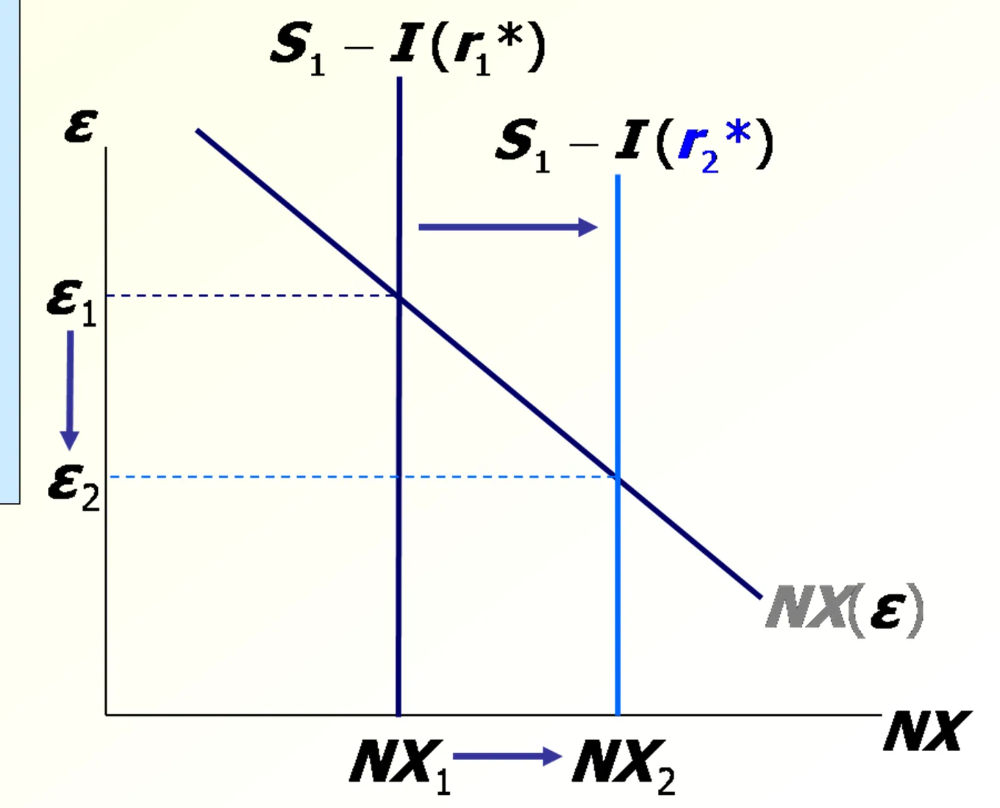
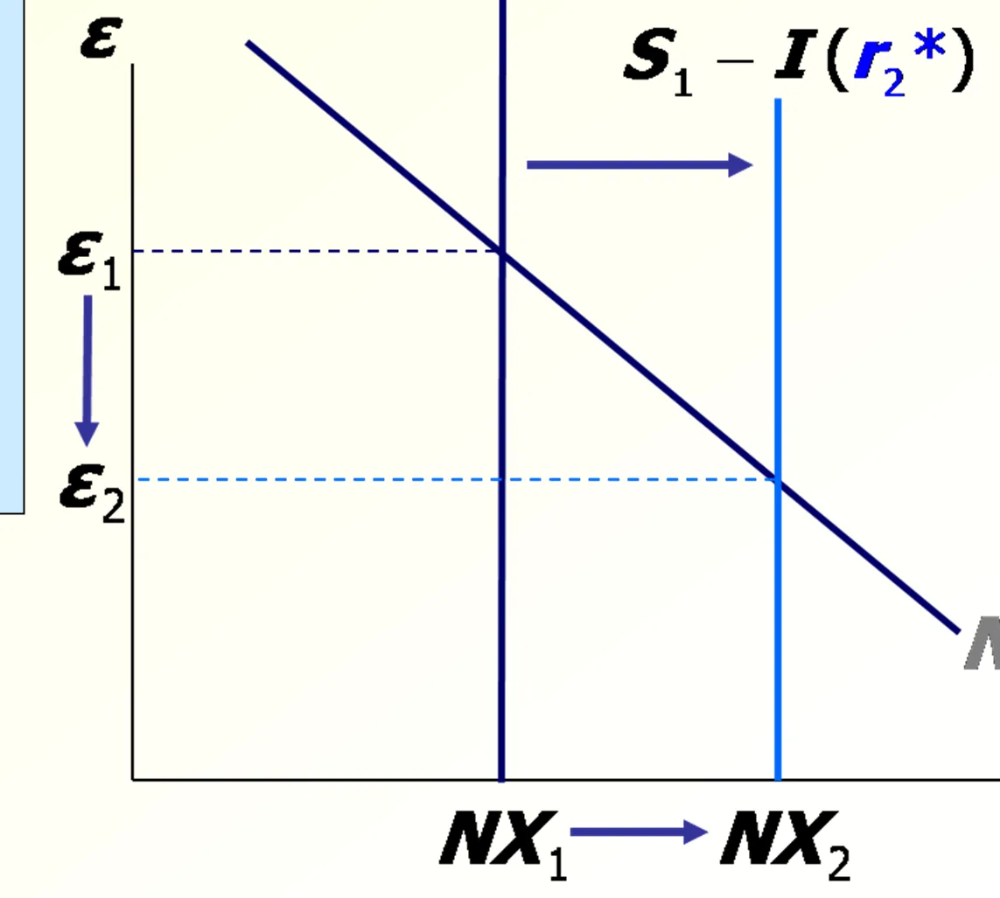
- 传导链：**r*↑ → I↓ → S − I↑ → 垂直供给线右移 → ε↓（实际贬值）→ NX↑**。
- 与 6-22 一致。四个实验中，只有这个使 NX 上升。
6-423. An increase in investment demand
| 原文 | 中文对照 |
|---|---|
| 3. An increase in investment demand | 3. 投资需求增加 |
| An increase in investment reduces net capital outflows and the supply of pounds in the foreign exchange market… | 投资增加降低资本净流出与外汇市场上的英镑供给…… |
| ε | ε |
| NX | NX |
| NX(ε) | NX(ε) |
| ε 1 | ε1 |
| …causing the real exchange rate to rise and NX to fall. | ……导致实际汇率上升、NX 下降。 |
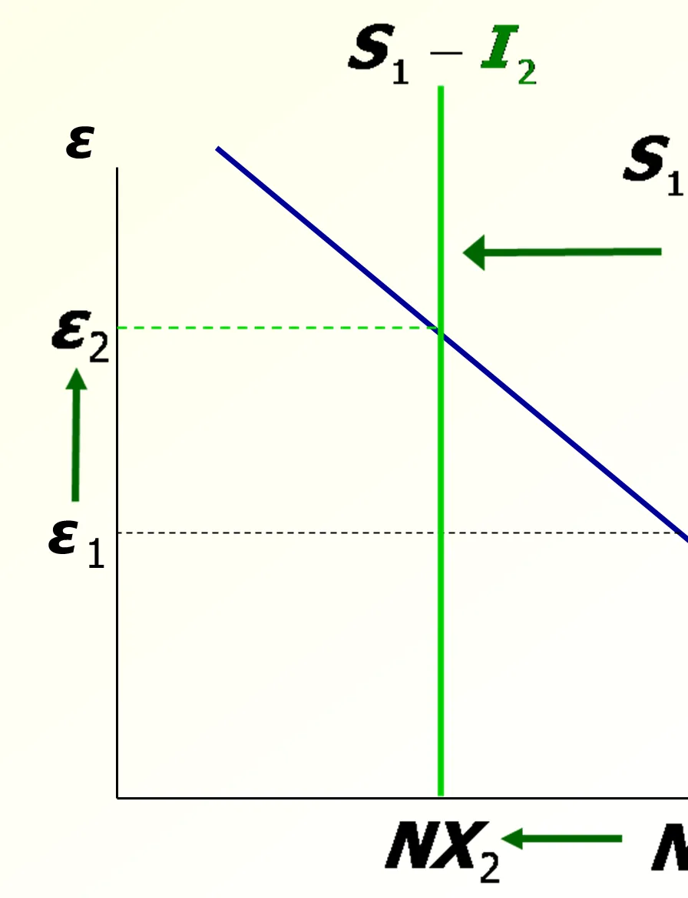
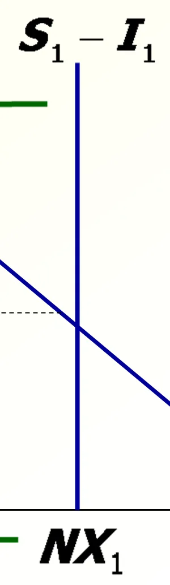
教师备注（原文＋译文）2 段
教师备注（原文照录）
Suggestion: Have your students do this experiment as an in-class exercise. Have them take out a piece of paper, draw the graph, then show what happens when there's an increase in the country's investment demand (perhaps in response to an investment tax credit).
教师备注（译文）
建议：让学生把这个实验作为课堂练习。让他们拿出一张纸，画出图形，然后说明当本国投资需求增加时（也许是对投资税收抵免的反应）会发生什么。
- 传导链：I↑ → S − I↓ → 垂直供给线左移 → ε↑ → NX↓。
- 与 6-24 一致：投资增加的部分完全由 NX 下降（即更多的进口/更少的出口）来「融资」。
6-434. Trade policy to restrict imports（第 1 帧）
| 原文 | 中文对照 |
|---|---|
| 4. Trade policy to restrict imports | 4. 限制进口的贸易政策 |
| At any given value of ε, an import quota （配额） | 在任意给定 ε 下，进口配额 |
| ⇒ IM ⇒ NX | ⇒ 进口下降 ⇒ NX 上升 |
| ⇒ demand for pounds shifts right | ⇒ 对英镑的需求右移 |
| ε | ε |
| NX | NX |
| NX (ε)2 | NX(ε)₂ |
| NX (ε)1 | NX(ε)₁ |
| ε 2 | ε2 |
| ε 1 | ε1 |
| Trade policy doesn't affect S or I, so capital flows and the supply of pounds remains fixed. | 贸易政策不影响 S 或 I，所以资本流动与英镑供给保持不变。 |
| NX1 | NX1 |
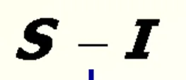
教师备注（原文＋译文）2 段
教师备注（原文照录）
The analysis here applies for import restrictions (tariffs, quotas) as well as export subsidies.
教师备注（译文）
这里的分析适用于进口限制（关税、配额）以及出口补贴。
- 机制：配额使每一 ε 下的 NX 都增加 → NX 曲线右移（不是沿曲线移动）。
- 但 S − I 不变（垂直供给线不动），所以均衡 NX 不变，只有 ε 上升。
- 这是本实验最反直觉的结论：限制进口不能改善贸易余额，只能让本币升值。
6-444. Trade policy to restrict imports（第 2 帧，结果）
| 原文 | 中文对照 |
|---|---|
| 4. Trade policy to restrict imports | 4. 限制进口的贸易政策 |
| Results: | 结果： |
| ε > 0 (demand increase) | Δε > 0（需求增加） |
| NX = 0 (supply fixed) | ΔNX = 0（供给固定） |
| IM < 0 (policy) | ΔIM < 0（政策本身） |
| EX < 0 (rise in ε) | ΔEX < 0（因 ε 上升） |
| ε | ε |
| NX | NX |
| NX (ε)2 | NX(ε)₂ |
| NX (ε)1 | NX(ε)₁ |
| ε 2 | ε2 |
| ε 1 | ε1 |
| NX1 | NX1 |
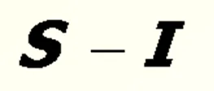
教师备注（原文＋译文）14 段
教师备注（原文照录）
In the text box, the remarks in parentheses after each result is an abbreviated explanation for that result.
The real exchange rate appreciates because the quota has raised the net demand for pounds associated with any given value of the exchange rate.
But the equilibrium level of net exports doesn't change, because the supply of pounds in the foreign exchange market (S-I) has not been affected by the trade policy. (Remember, S = Y-C-G, and the trade policy does not affect Y, C, or G; the policy also does not affect I, because I = I(r) and r is exogenous.)
The appreciation causes exports to fall.
And, since exports are lower but NX is unchanged, it must be the case that IM is lower too, which is what you'd expect from a trade policy that restricts imports.
This example is a perfect time to analyze the trade policies of President Trump (Case Study in the text) on the trade deficit. President Trump placed tariffs on multiple goods from many countries. One goal of his was to reduce or eliminate the trade deficit. However in both 2017 and 2019 the trade deficit was 2.9% of GDP. Trump did not reduce the trade deficit, but the lower amount of trade resulted in a loss of 7.2billion to the US economy (as found in Pablo D. Fajgelbaum, Pinelopi K. Goldberg, Patrick J. Kennedy, and Amit K. Khandelwal, "The Return to Protectionism," The Quarterly Journal of Economics 135, no. 1 (February 2020): 1–55.)
The analysis here applies for import restrictions (tariffs, quotas, "Buy American" Provisions) as well as export subsidies. It also applies for exogenous changes in preferences regarding domestic versus foreign goods.
教师备注（译文）
文本框里每个结果后面括号中的话，是对该结果的简要解释。
实际汇率升值，是因为配额提高了在任一给定汇率下对英镑的净需求。
但均衡净出口水平不变，因为外汇市场上的英镑供给（S−I）没有受到贸易政策影响。（记住 S = Y−C−G，而贸易政策不影响 Y、C 或 G；该政策也不影响 I，因为 I = I(r) 且 r 是外生的。）
升值导致出口下降。
而由于出口下降但 NX 不变，进口必然也下降——这正是限制进口的贸易政策所预期的结果。
这个例子正好用来分析特朗普总统贸易政策（教材案例）对贸易赤字的影响。特朗普对来自许多国家的多种商品加征关税，目标之一是减少或消除贸易赤字。然而 2017 与 2019 两年贸易赤字都占 GDP 的 2.9%。特朗普没有减少贸易赤字，但贸易量下降给美国经济造成了 72 亿美元的损失（见 Pablo D. Fajgelbaum、Pinelopi K. Goldberg、Patrick J. Kennedy 与 Amit K. Khandelwal，「The Return to Protectionism」，The Quarterly Journal of Economics 135 卷第 1 期，2020 年 2 月，第 1–55 页）。
这里的分析适用于进口限制（关税、配额、「买美国货」条款）以及出口补贴，也适用于对本国商品与外国商品偏好的外生变化。
- 四个结果构成一个闭环：ε↑、NX 不变、IM↓、EX↓——进口减少的部分正好被出口减少抵消。
- 备注的关键数据：2017 与 2019 年美国贸易赤字均为 GDP 的 2.9%，关税未能减少赤字，反而造成 72 亿美元损失。
- 这个实验是「政策无效性」的经典案例：不改变 S − I 的政策，无法改变 NX。
6-45The Determinants of the Nominal Exchange Rate（第 1 帧）
| 原文 | 中文对照 |
|---|---|
| The Determinants of the Nominal Exchange Rate | 名义汇率的决定因素 |
| Start with the expression for the real exchange rate: | 从实际汇率的表达式出发： |
| Solve it for the nominal exchange rate: | 解出名义汇率： |
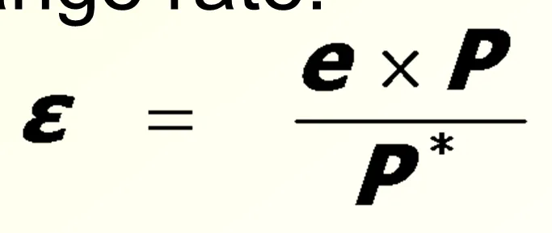
ε = (e × P) / P*
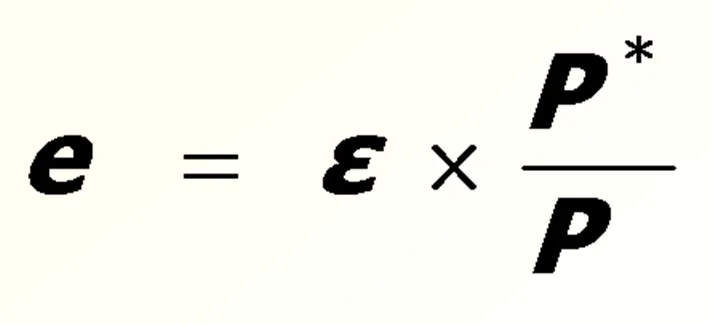
e = ε × (P* / P)
- 代数只有一步：把 ε = eP/P* 两边乘 P*/P，得 **e = ε × P*/P**。
- 含义：名义汇率由两个因素决定——实际汇率 ε 与两国价格水平之比 P*/P。
6-46The Determinants of the Nominal Exchange Rate（第 2 帧）
| 原文 | 中文对照 |
|---|---|
| The Determinants of the Nominal Exchange Rate | 名义汇率的决定因素 |
| So e depends on the real exchange rate and the price levels at home and abroad… | 所以 e 取决于实际汇率以及本国与外国价格水平…… |
| …and we know how each of them is determined: | ……而我们知道它们各自如何决定： |
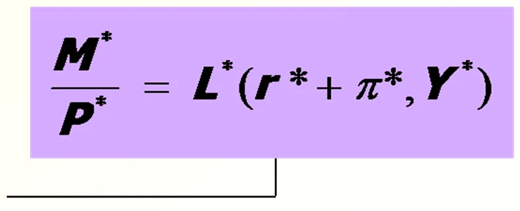
中文对照（三个决定因素）
ε 由 NX(ε) = S − I 决定（6-36）
P 由本国货币市场均衡决定（第 5 章：M/P = L）
P* 由外国货币市场均衡决定
- 完整的决定链：**ε（实际因素）→ P、P*（各自的名义货币市场）→ e**。
- 这正是古典二分法的体现（5-56）：实际汇率由实际因素定，名义汇率再叠加两国的货币因素。
6-47The Determinants of the Nominal Exchange Rate（第 3 帧）
| 原文 | 中文对照 |
|---|---|
| The Determinants of the Nominal Exchange Rate | 名义汇率的决定因素 |
| We can rewrite this equation in terms of growth rates (see "arithmetic tricks for working with percentage changes) | 我们可以把该方程改写为增长率形式（见「处理百分比变化的算术技巧」） |
| For a given value of ε, the growth rate of e equals the difference between foreign and domestic inflation rates. | 给定 ε 时，e 的增长率等于外国与本国通胀率之差。 |
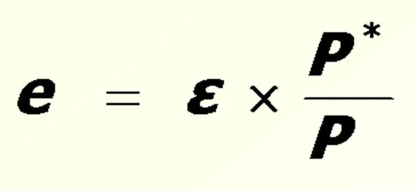
Δe/e = Δε/ε + π* − π
名义汇率增长率 = 实际汇率增长率 + 外国通胀率 − 本国通胀率
教师备注（原文＋译文）2 段
教师备注（原文照录）
Here we again see the Classical Dichotomy in action. The real exchange rate is determined by real factors, and nominal variables only affect nominal variables.
教师备注（译文）
这里我们再次看到古典二分法在起作用。实际汇率由实际因素决定，名义变量只影响名义变量。
- 用的是 2-41 的技巧 2（比率的增长率 = 分子增长率 − 分母增长率）。
- 特例：若 ε 不变（Δε/ε = 0），则 *Δe/e = π − π——通胀率更高的国家货币贬值**。
- 这就是「相对购买力平价」的动态版本，也是 6-48 数据的理论基础。
6-48Inflation differentials and nominal exchange rates
| 原文 | 中文对照 |
|---|---|
| Inflation differentials and nominal exchange rates for a cross section of countries | 跨国截面上的通胀差与名义汇率 |
| % change in nominal exchange rate | 名义汇率的百分比变化 |
| inflation differential | 通胀差 |
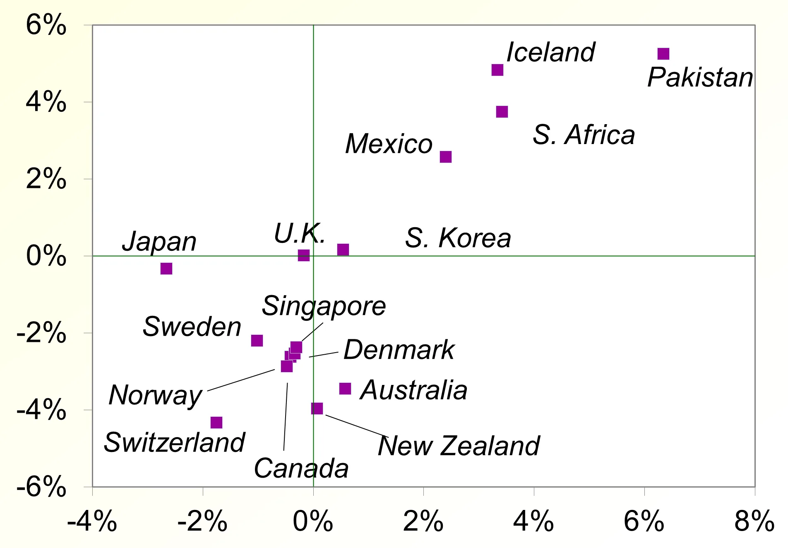
教师备注（原文＋译文）8 段
教师备注（原文照录）
Figure 6-13 on p. 164. The horizontal axis measures the country's inflation rate minus the U.S. inflation rate. The vertical axis measures the percentage change in the U.S. dollar exchange rate with that country (positive values mean the country's currency depreciates relative to the dollar). All variables are annual averages over the period 2001-2010.
This figure shows a positive relationship between the inflation differential and the rate of dollar appreciation: The higher a country's inflation relative to U.S. inflation, the faster the U.S. dollar will appreciate against that country's currency.
Source: International Financial Statistics
Note: Due to space constraints on this slide, Norway's point is not labeled; it is virtually identical to Canada's point.
教师备注（译文）
第 164 页图 6-13。横轴衡量该国通胀率减美国通胀率。纵轴衡量美元对该国货币汇率的百分比变化（正值表示该国货币相对美元贬值）。所有变量都是 2001–2010 年的年平均值。
该图显示通胀差与美元升值率之间正相关：一国通胀相对美国越高，美元对该国货币升值越快。
来源：International Financial Statistics
注：由于幻灯片空间有限，挪威的点未标注；它与加拿大的点几乎重合。
- 横轴：该国通胀 − 美国通胀；纵轴：美元对该国货币的升值率（正值 = 对方货币贬值）。
- 正相关 = 通胀更高的国家货币贬值更快，与 6-47 的 Δe/e = π* − π 完全一致。
- 数据：2001–2010 年年均值，散点大致沿 45° 线分布。
6-49Purchasing Power Parity (PPP)（购买力平价）
| 原文 | 中文对照 |
|---|---|
| Purchasing Power Parity (PPP)（购买力平价） | 购买力平价 |
| def1: a doctrine that states that goods must sell at the same (currency-adjusted) price in all countries. | 定义 1：一种学说，认为商品在所有国家必须以相同（经汇率调整后的）价格出售。 |
| def2: the nominal exchange rate adjusts to equalize the cost of a basket of goods across countries. | 定义 2：名义汇率调整到使一篮子商品的成本在各国相等。 |
| Reasoning: arbitrage (套利）, the law of one price | 推理依据：套利、一价定律 |
- 两个定义是同一件事的两种说法：价格相同（def1）与汇率调整到价格相同（def2）。
- 理论基础是一价定律（law of one price）：同一种商品在两地价格若不同，套利者会买低卖高，直到价差消失。
6-50Purchasing Power Parity (PPP)（公式）
| 原文 | 中文对照 |
|---|---|
| PPP: e P = P* | PPP：e × P = P* |
| Cost of a basket of foreign goods, in foreign currency. | 一篮子外国商品以外国货币计的成本。 |
| Cost of a basket of domestic goods, in foreign currency. | 一篮子本国商品以外国货币计的成本。 |
| Cost of a basket of domestic goods, in domestic currency. | 一篮子本国商品以本国货币计的成本。 |
| Solve for e: e = P*/ P | 解出 e：e = P*/P |
| PPP implies that the nominal exchange rate between two countries equals the ratio of the countries' price levels. | PPP 意味着两国之间的名义汇率等于两国价格水平之比。 |
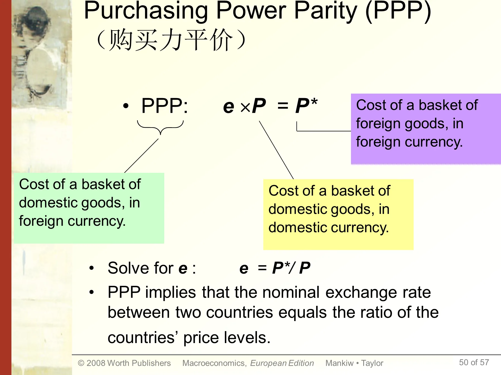
教师备注（原文＋译文）6 段
教师备注（原文照录）
PPP implies that the cost of a basket of goods (even a basket with just one good, like a Big Mac or a Mars bar) should be the same across countries.
e P = the foreign-currency cost of a basket of goods in the home country, while P* the cost of a basket of foreign goods.
PPP implies that the baskets cost the same in both countries: eP = P, which implies that e = P/P.
教师备注（译文）
PPP 意味着一篮子商品（哪怕只有一种商品，如巨无霸或玛氏巧克力）的成本在各国应当相同。
eP = 一篮子本国商品以外币计的成本，而 P* 是一篮子外国商品的成本。
PPP 意味着两国的篮子成本相同：eP = P，从而 e = P/P。
- 三行标注要对应清楚：eP 是「本国篮子换算成外币的价格」，P* 是「外国篮子的外币价格」，二者相等即 PPP。
- 结论式：**e = P*/P**——名义汇率等于两国价格水平之比。这是 PPP 的操作形式。
6-51Purchasing Power Parity (PPP)（ε = 1）
| 原文 | 中文对照 |
|---|---|
| If e = P*/P, then | 若 e = P*/P，则 |
| and the NX curve is horizontal: | 且 NX 曲线是水平的： |
| ε = 1 | ε = 1 |
| ε | ε |
| NX | NX |
| NX | NX |
| S - I | S − I |
| Under PPP, changes in (S - I) have no impact on ε or e. | 在 PPP 下，(S − I) 的变化对 ε 或 e 没有影响。 |
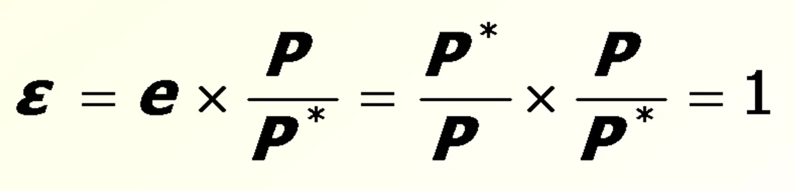
教师备注（原文＋译文）6 段
教师备注（原文照录）
Revisiting our model, this implies that the NX curve should be horizontal at = 1.
Intuition for the horizontal NX curve: Under PPP, different countries' goods are perfect substitutes, and international arbitrage is possible. If the relative price of home good fall even a tiny bit below 1, then there's a profit opportunity: buy home goods and sell them abroad. Hence, the tiniest drop in the real exchange rate causes a massive increase in NX. Similarly, if the relative price of home goods rises even a tiny amount above 1, then it is profitable to buy foreign goods and sell them at home, so this arbitrage causes a massive increase in imports---and decrease in NX.
Thus, under PPP, the real exchange rate equals 1 regardless of net capital outflows S-I. Changes in S or I have no impact on the real exchange rate.
教师备注（译文）
回到我们的模型，这意味着 NX 曲线应当在 ε = 1 处水平。
水平 NX 曲线的直觉：在 PPP 下，不同国家的商品是完全替代品，且国际套利可行。如果本国商品的相对价格哪怕只低于 1 一点点，就有获利机会：买入本国商品、卖到国外。因此实际汇率极小的下降就会引起 NX 的巨大增加。同样，如果本国商品的相对价格哪怕只高于 1 一点点，买入外国商品在本国出售就有利可图，这种套利会引起进口的巨大增加——以及 NX 的下降。
因此，在 PPP 下，无论资本净流出 S − I 是多少，实际汇率都等于 1。S 或 I 的变化对实际汇率没有影响。
- 推导：若 e = P/P，则 ε = eP/P = 1。所以 PPP 等价于「ε 恒等于 1」。
- NX 曲线变成水平线（在 ε = 1 处），意味着 NX 对 ε 无限敏感（完全替代品）。
- 结论：PPP 下汇率与 S − I 无关——这是与 6-37 模型的根本冲突，也解释了为什么 PPP 只是长期近似（6-53）。
6-52The Big Mac Index
| 原文 | 中文对照 |
|---|---|
| 1) Exchange Rates and Prices in the Long Run: Purchasing Power Parity | 1) 长期中的汇率与价格：购买力平价 |
| The Big Mac Index | 巨无霸指数 |
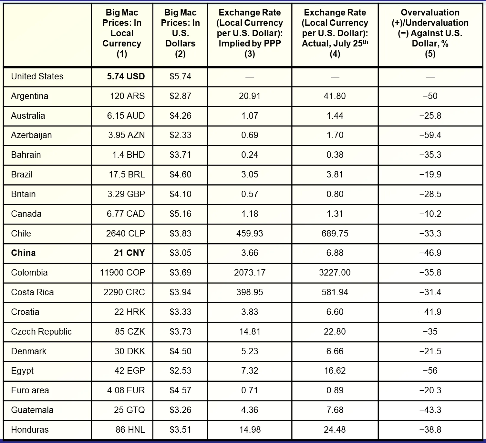
原表结构（照录列名）
| 列 | 内容 |
|---|---|
| (1) | Big Mac Prices: In Local Currency（本币价格） |
| (2) | Big Mac Prices: In U.S. Dollars（美元价格） |
| (3) | Exchange Rate: Implied by PPP（PPP 隐含汇率） |
| (4) | Exchange Rate: Actual（实际汇率） |
| (5) | Overvaluation (+)/Undervaluation (−) Against U.S. Dollar, %（对美元的溢价/折价 %） |
原表数据（照录，2019 年 7 月）
| 国家/地区 | (1) 本币价格 | (2) 美元价格 | (3) PPP 汇率 | (4) 实际汇率 | (5) 高估(+)/低估(−) % |
|---|---|---|---|---|---|
| United States | 5.74 USD | $5.74 | — | — | — |
| Argentina | 120 ARS | $2.87 | 20.91 | 41.80 | −50 |
| Australia | 6.15 AUD | $4.26 | 1.07 | 1.44 | −25.8 |
| Azerbaijan | 3.95 AZN | $2.33 | 0.69 | 1.70 | −59.4 |
| Bahrain | 1.4 BHD | $3.71 | 0.24 | 0.38 | −35.3 |
| Brazil | 17.5 BRL | $4.60 | 3.05 | 3.81 | −19.9 |
| Britain | 3.29 GBP | $4.10 | 0.57 | 0.80 | −28.5 |
| Canada | 6.77 CAD | $5.16 | 1.18 | 1.31 | −10.2 |
| Chile | 2640 CLP | $3.83 | 459.93 | 689.75 | −33.3 |
| China | 21 CNY | $3.05 | 3.66 | 6.88 | −46.9 |
| Colombia | 11900 COP | $3.69 | 2073.17 | 3227.00 | −35.8 |
| Costa Rica | 2290 CRC | $3.94 | 398.95 | 581.94 | −31.4 |
| Croatia | 22 HRK | $3.33 | 3.83 | 6.60 | −41.9 |
| Czech Republic | 85 CZK | $3.73 | 14.81 | 22.80 | −35 |
| Denmark | 30 DKK | $4.50 | 5.23 | 6.66 | −21.5 |
| Egypt | 42 EGP | $2.53 | 7.32 | 16.62 | −56 |
| Euro area | 4.08 EUR | $4.57 | 0.71 | 0.89 | −20.3 |
| Guatemala | 25 GTQ | $3.26 | 4.36 | 7.68 | −43.3 |
| Honduras | 86 HNL | $3.51 | 14.98 | 24.48 | −38.8 |
原页说明（照录并译）
The table shows the price of a Big Mac in July 2019 in local currency (column 1) and converted to U.S. dollars (column 2) using the actual exchange rate (column 4). The dollar price can then be compared with the average price of a Big Mac in the United States ($5.74 in column 1, row 1). The difference (column 5) is a measure of the overvaluation (+) or undervaluation (−) of the local currency against the U.S. dollar. The exchange rate against the dollar implied by PPP (column 3) is the hypothetical price of dollars in local currency that would have equalized burger prices, which may be compared with the actual observed exchange rate (column 4).
该表显示 2019 年 7 月巨无霸以本币计的价格（第 1 列），以及按实际汇率（第 4 列）换算成美元的价格（第 2 列）。美元价格可与美国巨无霸的平均价格（第 1 行第 1 列的 5.74 美元）比较。差额（第 5 列）衡量本币对美元的高估（+）或低估（−）。PPP 隐含的对美元汇率（第 3 列）是能使汉堡价格相等的假想本币兑美元价格，可与实际观察到的汇率（第 4 列）比较。
- 读表方法：第 2 列 < 5.74 美元 → 该国货币被低估（同样的汉堡换更少美元）。
- 极端值：阿塞拜疆 −59.4%、埃及 −56%、阿根廷 −50%、中国 −46.9%；最接近平价的是加拿大 −10.2%、巴西 −19.9%。
- 表中没有任何国家为正（高估），说明 2019 年 7 月美元整体偏强——这是 PPP 在现实中系统性偏离的证据（6-53）。
6-53Does PPP hold in the real world?
| 原文 | 中文对照 |
|---|---|
| Does PPP hold in the real world? | PPP 在现实世界成立吗？ |
| No, for two reasons: | 不成立，原因有二： |
| 1. International arbitrage not always possible. | 1. 国际套利并非总是可行。 |
| non-traded goods | 不可贸易品 |
| transportation costs | 运输成本 |
| 2. Goods of different countries not perfect substitutes. | 2. 不同国家的商品不是完全替代品。 |
| Nonetheless, PPP is a useful theory: | 尽管如此，PPP 仍是一个有用的理论： |
| It's simple & intuitive | 它简单且直观 |
| In the real world, nominal exchange rates have a tendency toward their PPP values over the long run. | 在现实世界，名义汇率在长期有向其 PPP 值靠拢的趋势。 |
- 两条失败原因要能各举一例：不可贸易品（理发、住房服务无法套利）；运输成本（水泥、啤酒的价差可以长期存在）。
- 第二条更根本：商品不完全替代（同样的钱，消费者偏好本国产品），所以价差不会被套利完全消除。
- PPP 的定位：长期锚而非短期预测工具。这正是 6-51 的「水平 NX 曲线」在现实中应被替换为 6-34 的向下倾斜曲线的原因。
6-54CASE STUDY: The Reagan Deficits Revisited
| 原文 | 中文对照 |
|---|---|
| CASE STUDY: The Reagan Deficits Revisited | 案例研究：重新审视里根赤字 |
| 1970s | 1980s | actual change | closed economy | small open economy | |
|---|---|---|---|---|---|
| G – T | 2.2 | 3.9 | ↑ | ↑ | ↑ |
| S | 19.6 | 17.4 | ↓ | ↓ | ↓ |
| r | 1.1 | 6.3 | ↑ | ↑ | no change |
| I | 19.9 | 19.4 | ↓ | ↓ | no change |
| NX | -0.3 | -2.0 | ↓ | no change | ↓ |
| ε | 115.1 | 129.4 | ↑ | no change | ↑ |
Data: Decade averages; all except r and ε are expressed as a percent of GDP; ε is a trade-weighted index.
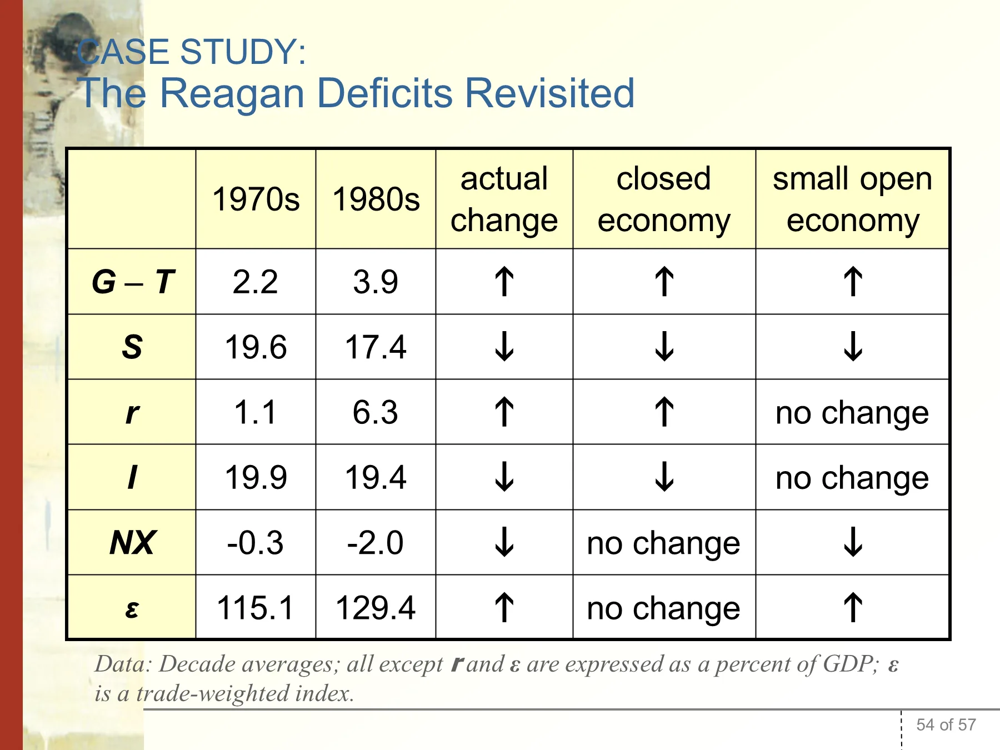
| 1970 年代 | 1980 年代 | 实际变化 | 封闭经济预测 | 小型开放经济预测 | |
|---|---|---|---|---|---|
| G − T（财政赤字，占 GDP %） | 2.2 | 3.9 | ↑ | ↑ | ↑ |
| S（国民储蓄，占 GDP %） | 19.6 | 17.4 | ↓ | ↓ | ↓ |
| r（实际利率，%） | 1.1 | 6.3 | ↑ | ↑ | 不变 |
| I（投资，占 GDP %） | 19.9 | 19.4 | ↓ | ↓ | 不变 |
| NX（净出口，占 GDP %） | −0.3 | −2.0 | ↓ | 不变 | ↓ |
| ε（贸易加权指数） | 115.1 | 129.4 | ↑ | 不变 | ↑ |
教师备注（原文＋译文）8 段
教师备注（原文照录）
This is a continuation of the case study that began in Chapter 3 (both the textbook and the PowerPoint presentation). It is placed here to motivate the last topic of Chapter 6: the U.S. as a large open economy.
As we saw in Chapter 3, the closed economy model correctly predicted that national saving would fall and the interest rate would rise. But, the closed economy model predicted that investment would fall as much as saving; actually, investment fell by much less than saving. Also, the closed economy model by definition could not have predicted the effects on the trade balance or exchange rate.
The small open economy model correctly predicted what would happen to NX and the real exchange rate, but incorrectly predicted that the interest rate and investment would not change.
In order to explain the U.S. experience, we need to combine the insights of the closed & small open economy models.
教师备注（译文）
这是第 3 章开始的案例研究的延续（教材与幻灯片都是）。把它放在这里，是为了引出第 6 章最后一个主题：作为大国开放经济的美国。
正如第 3 章所见，封闭经济模型正确预测了国民储蓄会下降、利率会上升。但封闭经济模型预测投资会与储蓄下降同样多；实际上投资下降远小于储蓄。而且封闭经济模型按定义无法预测对贸易余额或汇率的影响。
小型开放经济模型正确预测了 NX 与实际汇率的变化，但错误地预测利率与投资不变。
为了解释美国的经验，我们需要结合封闭经济模型与小型开放经济模型的洞见。
- 六个变量中，两个模型各对一半： | 变量 | 实际 | 封闭模型 | 小型开放模型 | |---|---|---|---| | S | ↓ | ✓ | ✓ | | r | ↑ | ✓ | ✗（预测不变） | | I | ↓（小幅） | ✓ 方向对、幅度错 | ✗ | | NX | ↓ | ✗（预测不变） | ✓ | | ε | ↑ | ✗（预测不变） | ✓ |
- 关键数字：r 从 1.1% 升到 6.3%（封闭模型对），NX 从 −0.3% 降到 −2.0%（小型开放模型对），ε 从 115.1 升到 129.4（小型开放模型对）。
- 结论：美国既不是完全封闭也不是「小」，而是介于两者之间（6-55）。
6-55The U.S. as a large open economy
| 原文 | 中文对照 |
|---|---|
| The U.S. as a large open economy | 作为大国开放经济的美国 |
| So far, we've learned long-run models for two extreme cases: | 到目前为止，我们学了两种极端情形的长期模型： |
| closed economy | 封闭经济 |
| small open economy | 小型开放经济 |
| A large open economy—like the U.S.—falls between these two extremes. | 像美国这样的大国开放经济介于这两个极端之间。 |
| The results from large open economy analysis are a mixture of the results for the closed & small open economy cases. | 大国开放经济分析的结果是封闭经济与小型开放经济两种情形的混合。 |
| For example . . . | 例如…… |
- 「大」的判据：能影响世界利率 r。美国的经济规模使其财政政策会改变 r，所以不能把 r* 当作外生。
- 因此大国模型的内生变量多了一个：*r 与 r 同时被决定**，结果落在两个极端之间。
6-56A fiscal expansion in three environments
| 原文 | 中文对照 |
|---|---|
| A fiscal expansion in three environments | 三种环境下的财政扩张 |
| A fiscal expansion causes national saving to fall. The effects of this depend on the degree of openness: | 财政扩张使国民储蓄下降。其影响取决于开放程度： |
| closed economy | large open economy | small open economy | |
|---|---|---|---|
| r | rises | rises, but not as much as in closed economy | no change |
| I | falls | falls, but not as much as in closed economy | no change |
| NX | 0 | falls, but not as much as in small open economy | falls |
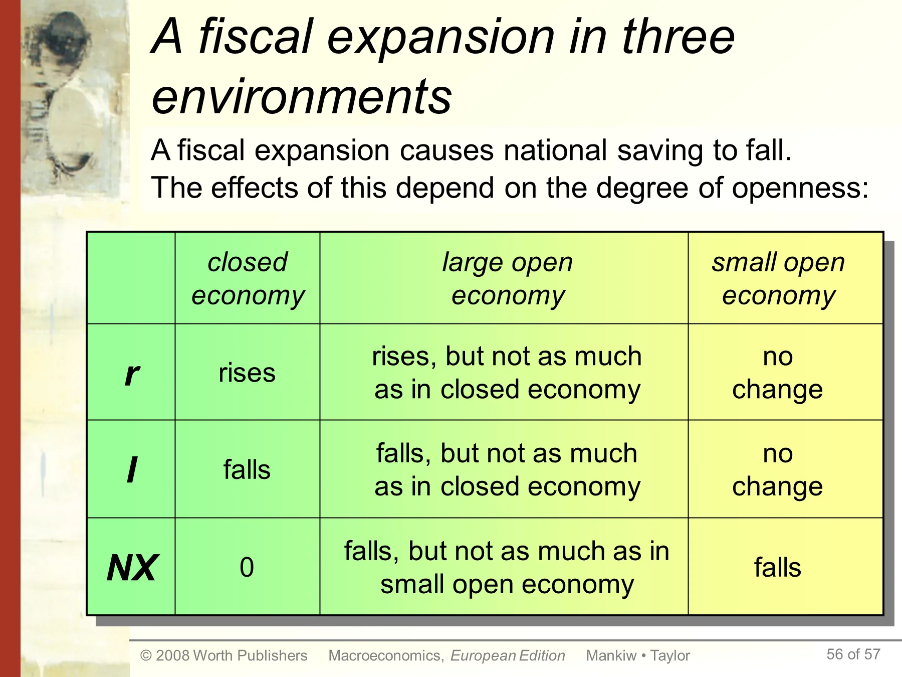
| 封闭经济 | 大国开放经济 | 小型开放经济 | |
|---|---|---|---|
| r | 上升 | 上升，但幅度小于封闭经济 | 不变 |
| I | 下降 | 下降，但幅度小于封闭经济 | 不变 |
| NX | 0 | 下降，但幅度小于小型开放经济 | 下降 |
教师备注（原文＋译文）2 段
教师备注（原文照录）
We have now looked at the case of a closed economy and a small open economy. For a large open economy, such as the U.S., results are in between the results for the closed & small open cases. "Falls, but not as much as in small open economy" means a weighted average of "no change" and "falls". In the case of the Eurozone it does not make sense to treat the area as a large open economy when we are talking of fiscal policy, since each country can run an independent fiscal policy.
教师备注（译文）
我们现在已经考察了封闭经济与小型开放经济两种情形。对像美国这样的大国开放经济，结果介于封闭与小型开放两种情形之间。「下降，但幅度小于小型开放经济」意味着「不变」与「下降」的加权平均。就欧元区而言，在讨论财政政策时把它当作大国开放经济是不合理的，因为每个国家都可以执行独立的财政政策。
- 三列的读法是连续谱：封闭 → 大国 → 小国，r 的升幅递减、I 的降幅递减、NX 的降幅递增。
- 一个校验：封闭经济 NX 恒为 0（因为 NX ≡ 0），所以财政扩张只能体现为 r↑、I↓；小国 r 不变，全部体现为 NX↓。
- 备注提醒：欧元区不能当大国开放经济处理，因为没有统一的财政政策。
6-57Chapter summary（第 1 帧）
| 原文 | 中文对照 |
|---|---|
| Chapter summary | 本章总结 |
| 1. Net exports--the difference between | 1. 净出口——以下两者的差额 |
| exports and imports | 出口与进口 |
| a country's output (Y) and its spending (C + I + G) | 一国产出（Y）与其支出（C + I + G） |
| 2. Net capital outflow equals | 2. 资本净流出等于 |
| purchases of foreign assets minus foreign purchases of the country's assets | 购买外国资产减去外国购买本国资产 |
| the difference between saving and investment | 储蓄与投资的差额 |
| 3. National income accounts identities: | 3. 国民收入核算恒等式： |
| Y = C + I + G + NX | Y = C + I + G + NX |
| trade balance NX = S - I net capital outflow | 贸易余额 NX = S − I = 资本净流出 |
- 三条总结对应三种等价表述：NX 的三种算法（EX−IM；Y−(C+I+G)；S−I）必须能互换。
- 第 3 条是本章的枢纽：NX = S − I。
6-58Chapter summary（第 2 帧）
| 原文 | 中文对照 |
|---|---|
| Chapter summary | 本章总结 |
| 4. Impact of policies on NX: | 4. 政策对 NX 的影响： |
| NX increases if policy causes S to rise or I to fall | 若政策使 S 上升或 I 下降，NX 增加 |
| NX does not change if policy affects neither S nor I. Example: trade policy | 若政策既不影响 S 也不影响 I，NX 不变。例：贸易政策 |
| 5. Exchange rates | 5. 汇率 |
| nominal: the price of a country's currency in terms of another country's currency | 名义：一国货币以另一国货币表示的价格 |
| real: the price of a country's goods in terms of another country's goods. | 实际：一国商品以另一国商品表示的价格 |
| The real exchange rate equals the nominal rate times the ratio of prices of the two countries. | 实际汇率等于名义汇率乘以两国价格之比。 |
- 判据一句话：只有改变 S − I 的政策才能改变 NX。这是四个实验的统一结论。
- 汇率关系式：ε = e × P/P*（6-28），三种表述（名义、实际、二者关系）要能互换。
6-59Chapter summary（第 3 帧）
| 原文 | 中文对照 |
|---|---|
| Chapter summary | 本章总结 |
| 6. How the real exchange rate is determined | 6. 实际汇率如何决定 |
| NX depends negatively on the real exchange rate, other things equal | 其他条件不变时，NX 与实际汇率负相关 |
| The real exchange rate adjusts to equate NX with net capital outflow | 实际汇率调整到使 NX 等于资本净流出 |
| 7. How the nominal exchange rate is determined | 7. 名义汇率如何决定 |
| e equals the real exchange rate times the country's price level relative to the foreign price level. | e 等于实际汇率乘以本国价格水平相对于外国价格水平之比。 |
| For a given value of the real exchange rate, the percentage change in the nominal exchange rate equals the difference between the foreign & domestic inflation rates. | 给定实际汇率时，名义汇率的百分比变化等于外国与本国通胀率之差。 |
- 两条决定机制要分清层次：**ε 由 NX = S − I 决定（实际因素）；e 由 ε 与 P*/P 决定（叠加货币因素）**。
- 最后一句是 6-47 的结论：*Δe/e = π − π**（ε 不变时），即高通胀国货币贬值。